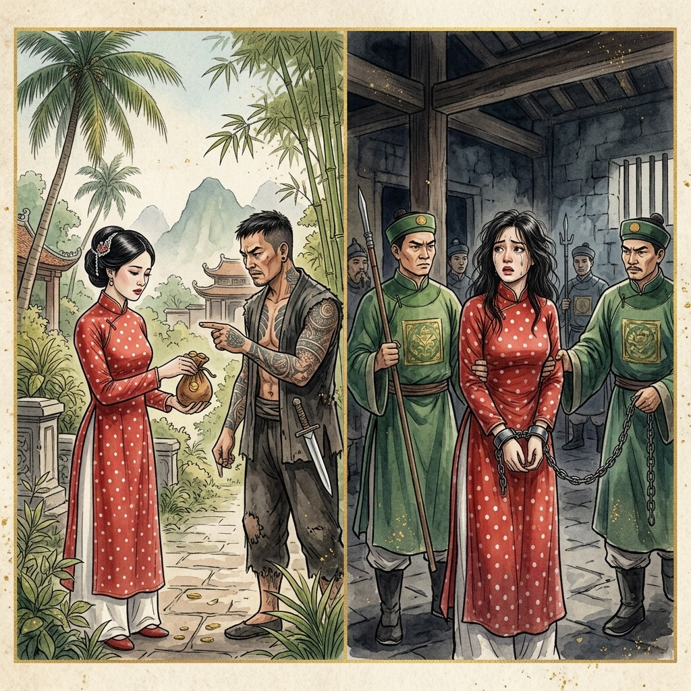
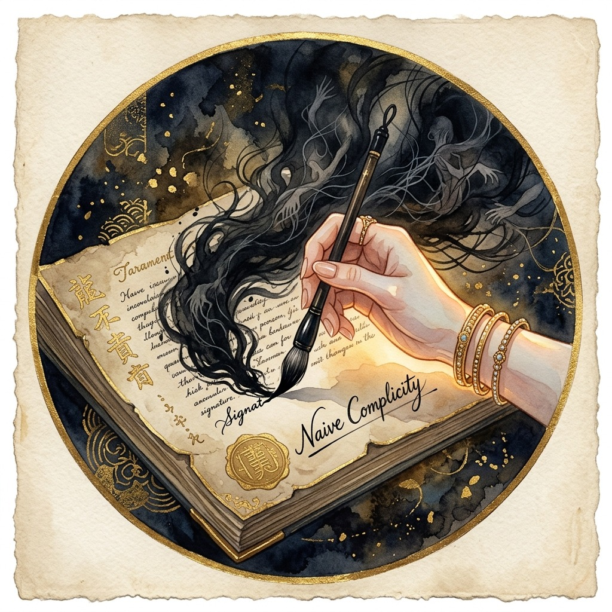
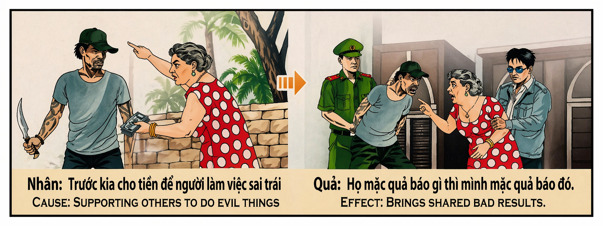

El Eco de la Mano Ajena The Echo of the Other's Hand L'eco della mano altrui 外人之手的回声 صدى اليد الغريبة Эхо чужой руки Das Echo der fremden Hand L'écho de la main d'autrui 他人の手のエコー O Eco de Mão Alheia Tiếng Vọng Của Bàn Tay Khác
"El karma no solo juzga la mano que empuña el metal, sino el cofre que compra el acero y el dedo que, con ingenua ceguera, abre el cerrojo del abismo." "Karma judges not only the hand that wields the metal, but the chest that buys the steel and the finger that, with naive blindness, unlocks the abyss." "Il karma non giudica solo la mano che impugna il metallo, ma lo scrigno che compra l'acciaio e il dito che, con ingenua cecità, apre il chiavistello dell'abisso." "因果业报不仅审判手持利刃的行凶者，也审判购买钢铁的钱箱，以及那根因幼稚盲目而开启深渊之锁的手指。" "إن الكارما لا تحكم فقط على اليد التي تشهر المعدن، بل على الصندوق الذي يشتري الفولاذ، والإصبع الذي، بعمى ساذج، يفتح قفل الهاوية." "Карма судит не только руку, сжимающую металл, но и ларец, что покупает сталь, и перст, который по наивной слепоте отпирает засов бездны." "Das Karma richtet nicht nur die Hand, die das Metall führt, sondern auch die Truhe, die den Stahl kauft, und den Finger, der in naiver Blindheit den Riegel des Abgrunds öffnet." "Le karma ne juge pas seulement la main qui brandit le métal, mais le coffre qui achète l'acier et le doigt qui, par un aveuglement naïf, ouvre le verrou de l'abîme." "カルマは、凶器を振るう手だけでなく、鋼鉄を買い取る金庫や、無知な盲目によって深淵の錠を開ける指をも裁くのである。" "O karma não julga apenas a mão que empunha o metal, mas o cofre que compra o aço e o dedo que, com ingênua cegueira, destranca o abismo." "Nhân quả không chỉ phán xét bàn tay cầm dao, mà còn phán xét chiếc rương mua sắt thép và ngón tay, bằng sự mù quáng ngây thơ, đã mở chốt khóa của vực sâu."
En la inmensa y delicada arquitectura del karma, existe una ley inquebrantable que a menudo pasa desapercibida para el ojo humano: la responsabilidad compartida. Creer que estamos libres de culpa porque nuestras manos no sostienen el puñal, o porque no fuimos nosotros quienes pronunciamos la injuria, es una de las mayores ilusiones del ego. La red espiritual de la causa y el efecto no posee hilos aislados. Quien financia una injusticia, quien la facilita con sus recursos, o quien simplemente le abre la puerta por negligencia o cobardía, queda indisolublemente ligado al destino del ejecutor. Como enseña la antigua sabiduría del templo: "Cualquiera que sea la retribución que ellos vistan, nosotros vestiremos la misma".
El financiamiento deliberado de un acto oscuro representa una de las deudas kármicas más severas. Cuando una persona utiliza su riqueza, su poder o su influencia para delegar un daño, buscando mantener su propia imagen limpia y a salvo del castigo físico, comete un acto de cobardía espiritual extrema. El universo no se deja engañar por la distancia física ni por los contratos de intermediarios. La moneda que sale del cofre del instigador lleva grabada la misma intención destructiva que el arma del asesino. En el registro kármico, el autor intelectual y el financiero absorben el pleno impacto de la violencia generada, pues operaron con frío cálculo y mala fe. No hay escudo de oro capaz de repeler el eco de la sangre derramada con su consentimiento.
Por otro lado, la complicidad ingenua o negligente posee matices dolorosos y profundos que merecen una atención especial. A menudo, personas de buen corazón se convierten en cómplices del mal simplemente por pereza de cuestionar, por miedo a perder un beneficio material, o por una sumisión ciega a la autoridad. Firmar un documento sin leerlo, prestar el propio nombre para una transacción dudosa, o callar ante una sospecha evidente son pequeños compromisos morales que abren las compuertas a tragedias incalculables. Aunque no exista una intención maliciosa activa en el alma del ingenuo, la negligencia es en sí misma una causa kármica. La vida nos exige ser guardianes conscientes de nuestras acciones y custodios de la paz ajena.
El efecto para el cómplice ingenuo no es el de la malicia activa, sino la terrible tragedia de la ceguera y la pérdida de la libertad. Aquel que se dejó utilizar como un instrumento dócil por el mal se verá arrastrado inevitablemente a la misma red de castigo y sufrimiento que el criminal. La justicia del universo nos enseña que el descuido de la propia rectitud tiene un costo altísimo. El cómplice ingenuo compartirá el calabozo, la vergüenza y las cadenas de aquel a quien ayudó, sufriendo el dolor adicional de la traición y el despertar tardío de su propia conciencia. Solo mediante un arrepentimiento sincero, una profunda reparación del daño y el cultivo de una vigilancia espiritual activa, el alma puede desatar los nudos de esta complicidad y recuperar su pureza originaria.
In the vast and delicate architecture of karma, there exists an unwavering law that often goes unnoticed by the human eye: shared responsibility. Believing we are free of blame because our hands do not hold the dagger, or because we were not the ones who uttered the insult, is one of the ego's greatest illusions. The spiritual web of cause and effect has no isolated threads. Whoever finances an injustice, facilitates it with their resources, or simply opens the door for it through negligence or cowardice, becomes indissolubly bound to the destiny of the executor. As the ancient wisdom of the temple teaches: "Whatever retribution they wear, we shall wear the same."
The deliberate financing of a dark deed represents one of the most severe karmic debts. When a person uses their wealth, power, or influence to delegate harm, seeking to keep their own image clean and safe from physical punishment, they commit an act of extreme spiritual cowardice. The universe is not deceived by physical distance or intermediary contracts. The coin that leaves the instigator's chest carries the same destructive intent as the assassin's weapon. In the karmic register, both the intellectual author and the financier absorb the full impact of the generated violence, as they operated with cold calculation and bad faith. No golden shield can repel the echo of blood shed with their consent.
On the other hand, naive or negligent complicity has painful and deep nuances that deserve special attention. Often, good-hearted people become accomplices to evil simply out of laziness to question, fear of losing a material benefit, or blind submission to authority. Signing a document without reading it, lending one's name for a doubtful transaction, or remaining silent in the face of an obvious suspicion are small moral compromises that open the floodgates to incalculable tragedies. Although there is no active malicious intent in the soul of the naive, negligence is in itself a karmic cause. Life demands that we be conscious guardians of our actions and custodians of others' peace.
The effect for the naive accomplice is not that of active malice, but the terrible tragedy of blindness and the loss of freedom. He who allowed himself to be used as a docile instrument by evil will inevitably be dragged into the same web of punishment and suffering as the criminal. The justice of the universe teaches us that neglecting one's own rectitude carries an extremely high cost. The naive accomplice will share the dungeon, the shame, and the chains of the one he helped, suffering the additional pain of betrayal and the late awakening of his own conscience. Only through sincere repentance, a profound reparation of the harm, and the cultivation of an active spiritual vigilance can the soul untie the knots of this complicity and recover its original purity.
Nella vasta e delicata architettura del karma, esiste una legge incrollabile che spesso sfugge all'occhio umano: la responsabilità condivisa. Credere di essere esenti da colpa perché le nostre mani non impugnano il pugnale, o perché non siamo stati noi a pronunciare l'ingiuria, è una delle più grandi illusioni dell'ego. La rete spirituale di causa ed effetto non ha fili isolati. Chi finanzia un'ingiustizia, chi la agevola con le proprie risorse o chi semplicemente le apre la porta per negligenza o codardia, rimane indissolubilmente legato al destino dell'esecutore. Come insegna l'antica saggezza del tempio: "Qualunque sia la retribuzione che essi indossano, noi indosseremo la stessa".
Il finanziamento deliberato di un atto oscuro rappresenta uno dei debiti karmici più gravi. Quando una persona usa la propria ricchezza, potere o influenza per delegare un danno, cercando di mantenere la propria immagine pulita e al sicuro dalla punizione fisica, compie un atto di estrema codardia spirituale. L'universo non si lascia ingannare dalla distanza fisica né dai contratti degli intermediari. La moneta che esce dallo scrigno dell'istigatore porta con sé la stessa intenzione distruttiva dell'arma dell'assassino. Nel registro karmico, sia l'autore intellettuale che il finanziatore assorbono l'intero impatto della violenza generata, poiché hanno agito con freddo calcolo e malafede. Non c'è scudo d'oro capace di respingere l'eco del sangue versato con il loro consenso.
D'altra parte, la complicità ingenua o negligente possiede sfumature dolorose e profonde che meritano una speciale attenzione. Spesso, persone di buon cuore diventano complici del male semplicemente per pigrizia nel porsi domande, per paura di perdere un beneficio materiale o per cieca sottomissione all'autorità. Firmare un documento senza leggerlo, prestare il proprio nome per una transazione dubbia o tacere di fronte a un evidente sospetto sono piccoli compromessi morali che aprono le porte a tragedie incalcolabili. Anche se non esiste un'intenzione maliziosa attiva nell'anima dell'ingenuo, la negligenza è di per sé una causa karmica. La vita ci impone di essere custodi consapevoli delle nostre azioni e protettori della pace altrui.
L'effetto per il complice ingenuo non è quello della malizia attiva, bensì la terribile tragedia della cecità e della perdita della libertà. Colui che si è lasciato usare come docile strumento del male sarà inevitabilmente trascinato nella stessa rete di punizione e sofferenza del criminale. La giustizia dell'universo ci insegna che trascurare la propria rettitudine ha un costo altissimo. Il complice ingenuo condividerà la prigione, la vergogna e le catene di colui che ha aiutato, soffrendo il dolore aggiuntivo del tradimento e del tardivo risveglio della propria coscienza. Solo attraverso un pentimento sincero, una profonda riparazione del danno e il cultivo di una vigilanza spirituale attiva, l'anima può sciogliere i nodi di questa complicità e recuperare la sua purezza originaria.
在因果业报那浩瀚而精妙的结构中，存在着一条人眼常常忽略的铁律：共同责任。相信自己因为双手没有握着匕首，或者因为自己不是吐露侮辱之言的人而免于罪责，是自我最大的幻觉之一。因果循环的精神网络中没有孤立的线。谁资助了不义之举，用资源提供了便利，或者仅仅因为疏忽或懦弱而为其敞开大门，谁就与执行者的命运紧密相连。正如神庙的古老智慧所教导的：“无论他们身受何种报应，我们也必将身受相同的报应。”
故意资助黑暗行为代表着最严重的业债之一。当一个人利用财富、权力或影响力来委派伤害，试图保持自己形象的洁净并免受肉体惩罚时，他便犯下了极度精神懦弱的罪行。宇宙不会被物理距离或中介合同所欺骗。从煽动者钱箱中流出的钱币，承载着与刺客武器相同的破坏性意图。在因果册上，幕后策划者和资助者都完全承受了所产生暴力的全部冲击，因为他们是在冷酷的计算和恶意下行事的。任何金盾都无法阻挡因他们同意而流下的鲜血的回声。
另一方面，幼稚或疏忽的共犯关系具有痛苦而深刻的细微差别，值得特别关注。好人往往仅仅因为懒于质疑、害怕失去物质利益或对权威的盲目服从，而成为邪恶的共犯。不加阅读就签署文件、为可疑交易借出名字，或者在显而易见的怀疑面前保持沉默，这些都是微小的道德妥协，却能打开通往无法估量的悲剧的闸门。尽管在幼稚者的灵魂中没有主动的恶意，但疏忽本身就是一种业因。生命要求我们做自己行为的清醒守护者，做他人和平的托管人。
对于幼稚共犯而言，其后果不是主动的恶意，而是失明和失去自由的惨痛悲剧。那个让自己成为邪恶温顺工具的人，将不可避免地被卷入与罪犯相同的惩罚和痛苦之网中。宇宙的公正教导我们，忽视自身的正直要付出极高的代价。幼稚的共犯将与他所帮助的人分享牢房、耻辱和锁链，并遭受背叛的额外痛苦以及自身良知的迟来觉醒。只有通过真诚的忏悔、对伤害的深刻弥补以及积极精神警惕的培养，灵魂才能解开这层共犯关系的结，恢复其原始的纯洁。
في بنية الكارما الشاسعة والدقيقة، هناك قانون راسخ لا يلاحظه العين البشرية غالبًا: المسؤولية المشتركة. إن الاعتقاد بأننا مبرؤون من الذنب لأن أيدينا لا تمسك بالخنجر، أو لأننا لم نكن من نطق بالإهانة، هو أحد أكبر أوهام الأنا. الشبكة الروحية للسبب والنتيجة لا تحتوي على خيوط معزولة. فكل من يمول مظلمة، أو يسهلها بموارده، أو ببساطة يفتح لها الباب من خلال الإهمال أو الجبن، يصبح مرتبطًا ارتباطًا وثيقًا بمصير المنفذ. وكما تعلم الحكمة القديمة للمعبد: "أياً كان الجزاء الذي يرتدونه، فإننا سنرتدي مثله تماماً".
إن التمويل المتعمد لعمل مظلم يمثل أحد أشد الديون الكارمية خطورة. عندما يستخدم الشخص ثروته أو قوته أو نفوذه لتفويض الضرر، سعياً للحفاظ على صورته نظيفة وآمنة من العقاب البدني، فإنه يرتكب عملاً من أعمال الجبن الروحي المطلق. إن الكون لا يخدعه البعد الجغرافي أو عقود الوسطاء. فالعملة التي تغادر صندوق المحرض تحمل نفس النية التدميرية التي يحملها سلاح القاتل. في السجل الكارمي، يمتص كل من الكاتب الفكري والممول الأثر الكامل للعنف المتولد، حيث عملا بحسابات باردة وسوء نية. ولا يمكن لأي درع ذهبي أن يدفع صدى الدماء التي أُريقت بموافقتهم.
من ناحية أخرى، فإن التواطؤ الساذج أو المهمل يحمل تفاصيل مؤلمة وعميقة تستحق اهتمامًا خاصًا. في كثير من الأحيان، يصبح الأشخاص ذوو القلوب الطيبة شركاء في الشر ببساطة بسبب الكسل عن التساؤل، أو الخوف من خسارة منفعة مادية، أو الخضوع الأعمى للسلطة. إن توقيع وثيقة دون قراءتها، أو إعارة الاسم لمعاملة مشبوهة، أو الصمت أمام شك واضح، هي تنازلات أخلاقية صغيرة تفتح الأبواب لخطوب لا حصر لها. وعلى الرغم من عدم وجود نية خبيثة نشطة في روح الساذج، إلا أن الإهمال في حد ذاته هو سبب كارمي. تطلب الحياة منا أن نكون حراساً واعين لأفعالنا وأمناء على سلام الآخرين.
الأثر بالنسبة للشريك الساذج ليس هو الخبث النشط، بل المأساة الرهيبة للعمى وفقدان الحرية. إن من سمح لنفسه بأن يُستخدم كأداة طيعة للشر سيُجر حتماً إلى نفس شبكة العقاب والمعاناة التي يُجر إليها المجرم. إن عدالة الكون تعلمنا أن إهمال الاستقامة الشخصية يحمل تكلفة باهظة للغاية. سيشارك الشريك الساذج السجن، والعار، والسلاسل مع من ساعده، معانياً من الألم الإضافي المتمثل في الخيانة والصحوة المتأخرة لضميره. فقط من خلال الندم الصادق، والتعويض العميق للضرر، وتنمية اليقظة الروحية النشطة، يمكن للروح أن تحل عقد هذا التواطؤ وتستعيد نقاءها الأصلي.
В обширной и тонкой архитектуре кармы существует незыблемый закон, который часто ускользает от человеческого взора: разделенная ответственность. Верить в свою невиновность лишь потому, что наши руки не держат кинжал, или потому, что не мы произнесли оскорбление — одна из величайших иллюзий эго. В духовной сети причин и следствий нет изолированных нитей. Тот, кто финансирует несправедливость, способствует ей своими ресурсами или просто открывает перед ней дверь по небрежности или трусости, становится неразрывно связан с судьбой исполнителя. Как учит древняя мудрость храма: «Какое бы возмездие они ни несли, мы разделим то же самое».
Преднамеренное финансирование темного деяния представляет собой один из самых тяжелых кармических долгов. Когда человек использует свое богатство, власть или влияние, чтобы переложить причинение вреда на других, стремясь сохранить собственное имя чистым и уберечься от физического наказания, он совершает акт крайней духовной трусости. Вселенная не поддается обману физическим расстоянием или контрактами посредников. Монета, покидающая ларец подстрекателя, несет в себе то же разрушительное намерение, что и оружие убийцы. В кармическом реестре как идейный вдохновитель, так и финансист принимают на себя весь удар порожденного насилия, поскольку они действовали с холодным расчетом и злым умыслом. Никакой золотой щит не сможет отразить эхо крови, пролитой с их согласия.
С другой стороны, наивное или халатное соучастие имеет болезненные и глубокие нюансы, заслуживающие особого внимания. Часто добросердечные люди становятся соучастниками зла просто из-за нежелания задавать вопросы, страха лишиться материальной выгоды или слепого подчинения авторитету. Подписание документа без прочтения, предоставление своего имени для сомнительной сделки или молчание при очевидном подозрении — это малые моральные компромиссы, открывающие шлюзы для неисчислимых трагедий. Хотя в душе наивного нет активного злого умысла, небрежность сама по себе является кармической причиной. Жизнь требует, чтобы мы были сознательными стражами своих поступков и хранителями покоя других.
Последствием для наивного соучастника становится не активная злоба, а ужасная трагедия слепоты и утраты свободы. Тот, кто позволил злу использовать себя в качестве послушного инструмента, неизбежно будет втянут в ту же сеть наказания и страданий, что и преступник. Правосудие Вселенной учит нас, что пренебрежение собственной праведностью обходится крайне дорого. Наивный соучастник разделит темницу, позор и цепи того, кому он помог, испытывая дополнительную боль от предательства и запоздалого пробуждения собственной совести. Только через искреннее покаяние, глубокое искупление вреда и воспитание активной духовной бдительности душа может развязать узлы этого соучастия и вернуть свою первозданную чистоту.
In der weiten und feinen Architektur des Karmas existiert ein unumstößliches Gesetz, das dem menschlichen Auge oft entgeht: die geteilte Verantwortung. Zu glauben, wir seien frei von Schuld, weil unsere Hände den Dolch nicht halten oder weil wir die Beleidigung nicht ausgesprochen haben, ist eine der größten Illusionen des Egos. Das spirituelle Netz von Ursache und Wirkung hat keine isolierten Fäden. Wer eine Ungerechtigkeit finanziert, sie mit seinen Ressourcen erleichtert oder ihr einfach aus Nachlässigkeit oder Feigheit die Tür öffnet, wird unauflöslich an das Schicksal des Vollstreckers gebunden. Wie die alte Weisheit des Tempels lehrt: „Welche Vergeltung sie auch tragen, wir werden dieselbe tragen.“
Die vorsätzliche Finanzierung einer dunklen Tat stellt eine der schwersten karmischen Schulden dar. Wenn eine Person ihren Reichtum, ihre Macht oder ihren Einfluss nutzt, um Schaden zu delegieren, und versucht, ihr eigenes Image sauber und vor physischer Strafe geschützt zu halten, begeht sie einen Akt extremer spiritueller Feigheit. Das Universum lässt sich weder durch physische Distanz noch durch Verträge von Vermittlern täuschen. Die Münze, die die Truhe des Anstifters verlässt, trägt dieselbe zerstörerische Absicht in sich wie die Waffe des Mörders. Im karmischen Register absorbieren sowohl der geistige Urheber als auch der Finanzier die volle Wirkung der erzeugten Gewalt, da sie mit kaltem Kalkül und böser Absicht gehandelt haben. Kein goldener Schild kann das Echo des mit ihrer Zustimmung vergossenen Blutes abwehren.
Auf der anderen Seite hat die naive oder nachlässige Mitschuld schmerzhafte und tiefe Nuancen, die besondere Aufmerksamkeit verdienen. Oft werden gutherzige Menschen zum Komplizen des Bösen, einfach aus Faulheit zu hinterfragen, aus Angst, einen materiellen Vorteil zu verlieren, oder aus blindem Gehorsam gegenüber der Autorität. Ein Dokument zu unterschreiben, ohne es zu lesen, seinen Namen für eine zweifelhafte Transaktion zur Verfügung zu stellen oder angesichts eines offensichtlichen Verdachts zu schweigen, sind kleine moralische Kompromisse, die die Schleusen für unermessliche Tragödien öffnen. Obwohl in der Seele des Naiven keine aktive böswillige Absicht liegt, ist Nachlässigkeit an sich eine karmische Ursache. Das Leben verlangt, dass wir bewusste Wächter unserer Handlungen und Hüter des Friedens der anderen sind.
Die Wirkung für den naiven Komplizen ist nicht die der aktiven Bosheit, sondern die schreckliche Tragödie der Blindheit und des Verlusts der Freiheit. Wer sich vom Bösen als gefügiges Werkzeug benutzen ließ, wird unweigerlich in dasselbe Netz von Strafe und Leiden hineingezogen wie der Kriminelle. Die Gerechtigkeit des Universums lehrt uns, dass die Vernachlässigung der eigenen Rechtschaffenheit einen extrem hohen Preis fordert. Der naive Komplize wird das Gefängnis, die Schande und die Ketten desjenigen teilen, dem er geholfen hat, und leidet unter dem zusätzlichen Schmerz des Verrats und des späten Erwachens seines eigenen Gewissens. Nur durch aufrichtige Reue, eine tiefe Wiedergutmachung des Schadens und die Kultivierung einer active spirituellen Wachsamkeit kann die Seele die Knoten dieser Mitschuld lösen und ihre ursprüngliche Reinheit wiedererlangen.
Dans la vaste et délicate architecture du karma, il existe une loi inébranlable qui passe souvent inaperçue aux yeux des hommes : la responsabilité partagée. Croire que nous sommes exempts de culpabilité parce que nos mains ne tiennent pas le poignard, ou parce que ce n'est pas nous qui avons prononcé l'injure, est l'une des plus grandes illusions de l'ego. Le réseau spirituel de cause à effet ne possède pas de fils isolés. Quiconque finance une injustice, la facilite par ses ressources ou lui ouvre simplement la porte par négligence ou par lâcheté, reste indissolublement lié au destin de l'exécuteur. Comme l'enseigne l'ancienne sagesse du temple : "Quel que soit le châtiment qu'ils revêtent, nous revêtirons le même."
Le financement délibéré d'une œuvre sombre représente l'une des dettes karmiques les plus sévères. Lorsqu'une personne utilise sa richesse, son pouvoir ou son influence pour déléguer un préjudice, cherchant à garder sa propre image propre et à l'abri du châtiment physique, elle commet un acte d'extrême lâcheté spirituelle. L'univers ne se laisse pas tromper par la distance physique ni par les contrats d'intermédiaires. La pièce qui sort du coffre de l'instigateur porte la même intention destructrice que l'arme de l'assassin. Dans le registre karmique, l'auteur intellectuel et le financier absorbent le plein impact de la violence générée, car ils ont agi avec un froid calcul et de mauvaise foi. Aucun bouclier d'or ne peut repousser l'écho du sang versé avec leur consentement.
D'un autre côté, la complicité naïve ou négligente possède des nuances douloureuses et profondes qui méritent une attention particulière. Souvent, des personnes de bon cœur deviennent complices du mal simplement par paresse de questionner, par peur de perdre un avantage matériel ou par soumission aveugle à l'autorité. Signer un document sans le lire, prêter son nom pour une transaction douteuse ou se taire face à un soupçon évident sont de petits compromis moraux qui ouvrent la porte à des tragédies incalculables. Bien qu'il n'y ait pas d'intention malveillante active dans l'âme du naïf, la négligence est en soi une cause karmique. La vie exige que nous soyons les gardiens conscients de nos actes et les dépositaires de la paix d'autrui.
L'effet pour le complice naïf n'est pas celui de la malice active, mais la terrible tragédie de l'aveuglement et de la perte de liberté. Celui qui s'est laissé utiliser comme un instrument docile par le mal sera inévitablement entraîné dans le même réseau de punition et de souffrance que le criminel. La justice de l'univers nous enseigne que négliger sa propre rectitude coûte extrêmement cher. Le complice naïf partagera le cachot, la honte et les chaînes de celui qu'il a aidé, souffrant de la douleur supplémentaire de la trahison et du réveil tardif de sa propre conscience. Ce n'est que par un repentir sincère, une réparation profonde du préjudice et le développement d'une vigilance spirituelle active que l'âme peut dénouer les liens de cette complicité et retrouver sa pureté originelle.
カルマの広大で繊細な構造には、人間の目には見過ごされがちな揺るぎない法則が存在します。それは「連帯責任」です。私たちの手が短剣を握っていないから、あるいは侮辱の言葉を口にしたのが自分ではないからといって、自分に罪がないと信じることは、自我の最大の錯覚の一つです。因果応報の霊的な網には、孤立した糸は存在しません。不義に資金を提供し、資源でそれを助長し、あるいは単に怠慢や卑怯によってその扉を開く者は、実行者の運命と不可分に結びつくことになります。寺院の古き知恵が教えるように、「彼らがどのような報いを受けようとも、私たちも同じ報いを受けることになる」のです。
闇の行為に故意に資金を提供することは、最も深刻なカルマの負債の一つです。物理的な罰から自分のイメージを清らかに保ち、安全を確保しようとして、富や権力、影響力を利用して害を委託するとき、その人は極限の霊的卑怯さを犯しています。宇宙は、物理的な距離や仲介契約に惑わされません。教唆者の金庫から出るコインには、暗殺者の武器と同じ破壊的な意図が刻まれています。カルマの登録簿においては、冷酷な計算と悪意をもって行動したため、精神的な首謀者も出資者も、生み出された暴力の完全な衝撃をそのまま吸収します。彼らの同意のもとで流された血のエコーは、いかなる黄金の盾をもってしても防ぐことはできません。
他方で、無知や怠慢による共犯関係には、特別な注意を払うべき痛みと深いニュアンスがあります。多くの場合、善意の人々が、疑問を持つことの怠慢、物質的利益を失うことへの恐れ、あるいは権威への盲従によって、簡単に悪の共犯者になってしまいます。内容を読まずに書類に署名すること、不審な取引に名前を貸すこと、あるいは明らかな疑惑を前にして沈黙することは、計り知れない悲劇の防潮堤を開く小さな道徳的妥協です。無知な者の魂に能動的な悪意はなくても、怠慢それ自体がカルマの「因」となります。人生は、私たちが自身の行動の意識的な守護者であり、他者の平和の管理者であることを求めているのです。
無知な共犯者に対する「果」は、能動的な悪意ではなく、盲目と自由の喪失という恐ろしい悲劇です。悪によって従順な道具として利用されることを許した者は、必然的に犯罪者と同じ罰と苦しみの網に引きずり込まれます。宇宙の正義は、自身の誠実さを怠ることは極めて高い代償を伴うことを教えています。無知な共犯者は、自分が助けた者と牢獄、恥辱、および鎖を共有し、裏切りの追加的な痛みと自分自身の良心の遅すぎる目覚めに苦しむことになります。誠実な悔い改め、傷の深い修復、および能動的な霊的警戒の育成を通じてのみ、魂はこの共犯関係の結び目を解き、本来の純粋さを取り戻すことができるのです。
Na vasta e delicada arquitetura do karma, existe uma lei inabalável que frequentemente passa despercebida ao olho humano: a responsabilidade compartilhada. Acreditar que estamos livres de culpa porque nossas mãos não seguram o punhal, ou porque não fomos nós quem proferiu a injúria, é uma das maiores ilusões do ego. A teia espiritual de causa e efeito não possui fios isolados. Quem financia uma injustiça, quem a facilita com seus recursos, ou quem simplesmente lhe abre a porta por negligência ou covardia, fica indissoluvelmente ligado ao destino do executor. Como ensina a antiga sabedoria do templo: "Qualquer que seja a retribuição que eles vistam, nós vestiremos a mesma."
O financiamento deliberado de um ato sombrio representa uma das dívidas kármicas mais severas. Quando uma pessoa utiliza sua riqueza, seu poder ou sua influência para delegar um dano, buscando manter sua própria imagem limpa e a salvo do castigo físico, comete um ato de covardia espiritual extrema. O universo não se deixa enganar pela distância física nem por contratos de intermediários. A moeda que sai do cofre do instigador carrega a mesma intenção destrutiva que a arma do assassino. No registro kármico, o autor intelectual e o financeiro absorvem o pleno impacto da violência gerada, pois operaram com frio cálculo e má-fé. Não há escudo de ouro capaz de repelir o eco do sangue derramado com seu consentimento.
Por outro lado, a cumplicidade ingênua ou negligente possui nuances dolorosas e profundas que merecem atenção especial. Frequentemente, pessoas de bom coração tornam-se cúmplices do mal simplesmente por preguiça de questionar, por medo de perder um benefício material ou por submissão cega à autoridade. Assinar um documento sem ler, emprestar o próprio nome para uma transação duvidosa ou calar-se diante de uma suspeita evidente são pequenos compromissos morais que abrem as comportas para tragédias incalculáveis. Embora não exista uma intenção maliciosa ativa na alma do ingênuo, a negligência é em si uma causa kármica. A vida exige que sejamos guardiões conscientes de nossas ações e custódios da paz alheia.
O efeito para o cúmplice ingênuo não é o da malícia ativa, mas a terrível tragédia da cegueira e da perda de liberdade. Aquele que se deixou usar como instrumento dócil pelo mal será inevitavelmente arrastado para a mesma teia de punição e sofrimento que o criminoso. A justiça do universo nos ensina que o descuido com a própria retidão tem um custo altíssimo. O cúmplice ingênuo compartilhará o calabouço, a vergonha e as algemas daquele a quem ajudou, sofrendo a dor adicional da traição e o despertar tardio de sua própria consciência. Apenas através de um arrependimento sincero, de uma reparação profunda do dano e do cultivo de uma vigilância espiritual ativa, a alma pode desatar os nós dessa cumplicidade e recuperar sua pureza original.
Trong cấu trúc rộng lớn và tinh tế của nhân quả, tồn tại một quy luật bất biến mà mắt người thường ít khi nhận ra: trách nhiệm đồng lõa. Tin rằng mình vô tội chỉ vì bàn tay không trực tiếp cầm dao, hay vì mình không phải người phát ra lời lăng mạ, là một trong những ảo tưởng lớn nhất của bản ngã. Lưới trời lồng lộng của nhân quả không có những sợi chỉ đơn độc. Kẻ nào tài trợ cho một điều bất công, dùng tài sản tạo điều kiện cho nó, hay chỉ đơn giản là mở cửa cho nó bằng sự cẩu thả hoặc hèn nhát, đều sẽ bị trói buộc chặt chẽ vào số phận của kẻ trực tiếp hành ác. Như trí tuệ cổ xưa của đền đài dạy rằng: "Họ mặc quả báo gì thì mình mặc quả báo đó."
Việc cố ý tài trợ tài chính cho một hành vi đen tối là một trong những món nợ nhân quả nặng nề nhất. Khi một kẻ dùng tiền tài, quyền lực hoặc tầm ảnh hưởng của mình để thuê người gây hại, nhằm giữ cho hình ảnh bản thân sạch sẽ và an toàn trước sự trừng phạt của luật pháp thế gian, kẻ đó phạm vào sự hèn nhát tâm linh tột cùng. Vũ trụ không bị lừa dối bởi khoảng cách địa lý hay những bản hợp đồng trung gian. Đồng tiền rời khỏi chiếc rương của kẻ chủ mưu mang theo ý đồ hủy diệt giống hệt như vũ khí của kẻ sát nhân. Trong sổ sách nhân quả, cả kẻ chủ mưu lẫn kẻ tài trợ đều gánh chịu toàn bộ phản lực của bạo lực đã tạo ra, bởi họ đã hành động với sự tính toán lạnh lùng và ác ý. Không chiếc khiên vàng nào có thể cản được tiếng vọng của dòng máu đã đổ dưới sự đồng thuận của họ.
Mặt khác, sự đồng lõa ngây thơ hoặc cẩu thả lại mang những sắc thái đau đớn và sâu sắc cần được lưu tâm đặc biệt. Thông thường, những người có tâm địa lương thiện lại trở thành đồng phạm của cái ác chỉ vì sự lười biếng đặt câu hỏi, nỗi sợ mất đi một lợi ích vật chất trước mắt, hoặc sự phục tùng mù quáng trước quyền lực. Ký một văn bản mà không đọc kỹ, cho mượn danh nghĩa cho một giao dịch đáng ngờ, hoặc im lặng trước một mối nghi ngờ rõ ràng đều là những nhượng bộ đạo đức nhỏ bé nhưng lại mở toang cánh cửa cho những bi kịch khôn lường. Dù trong tâm hồn kẻ ngây thơ không có ác ý chủ động, nhưng sự cẩu thả tự thân nó đã là một nhân xấu. Đời sống đòi hỏi chúng ta phải là những người bảo hộ tỉnh thức cho hành vi của chính mình và là người gìn giữ hòa bình cho người khác.
Hậu quả đối với kẻ đồng lõa ngây thơ không phải là quả báo của lòng ác độc chủ động, mà là bi kịch khủng khiếp của sự mù quáng và mất đi tự do. Kẻ đã để mình bị cái ác lợi dụng như một công cụ ngoan ngoãn sẽ không tránh khỏi việc bị kéo vào cùng một lưới trừng phạt và đau khổ như kẻ thủ ác. Công lý của vũ trụ dạy ta rằng sự thờ ơ với việc gìn giữ phẩm hạnh cá nhân phải trả giá cực kỳ đắt. Kẻ đồng lõa ngây thơ sẽ phải chia sẻ chung ngục tù, sự nhục nhã và xiềng xích với kẻ mà mình đã giúp đỡ, đồng thời gánh chịu nỗi đau cay đắng của sự phản bội và sự thức tỉnh muộn màng của lương tâm. Chỉ thông qua sự sám hối chân thành, sự bù đắp sâu sắc cho những tổn hại đã gây ra và việc nuôi dưỡng sự tỉnh thức tâm linh chủ động, linh hồn mới có thể tháo gỡ các nút thắt đồng lõa này để tìm lại sự thuần khiết ban đầu.
Las Cuentas del Agua y el Fuego
The Reckoning of Water and Fire
I conti dell'acqua e del fuoco
水与火的账目
حسابات الماء والنار
Расчёты воды и огня
Die Abrechnung von Wasser und Feuer
Les Comptes de l'Eau et du Feu
水と火の帳簿
As Contas da Água e do Fogo
Sự Đối Trừ Giữa Nước Và Lửa
En las tierras brumosas de la antigua Annam, donde los ríos serpenteaban como dragones plateados entre los arrozales, vivía un comerciante viudo llamado Vinh. Vinh no era un hombre de gran riqueza, pero en su corazón habitaba una generosidad sin límites. Cada tarde, tras cerrar su modesto almacén de grano, reservaba un tercio de la cosecha para cocer arroz y alimentar a los huérfanos y mendigos de la provincia. Su almacén era un oasis de calidez y consuelo para los desamparados. Sin embargo, su virtud despertó la envidia y el rencor de Lady Bích, la mujer más rica y fría de la comarca, cuyos almacenes vendían arroz a precios abusivos y que veía en la caridad de Vinh una afrenta personal a su control comercial y a su orgullo.
Decidida a silenciar la bondad de Vinh, Lady Bích urdió un plan perverso. En lugar de manchar sus propias manos de seda, convocó en la penumbra de su jardín a Khanh, un temido mercenario cubierto de tatuajes y conocido por su despiadada crueldad. Bajo la sombra de una palmera, Lady Bích le entregó una pesada bolsa de monedas de oro, señalando con un dedo gélido hacia los almacenes de Vinh. "Quema sus graneros esta misma noche y asegúrate de que no quede una sola semilla en pie, ni una sola voz que cante su caridad", susurró con malicia. Khanh sonrió con una mueca sombría, sopesando el oro en su mano y acariciando el mango de su puñal. Lady Bích sonrió también, convencida de que al no tocar el fuego ella permanecería libre de sospecha y de culpa ante los ojos de la justicia.
En la misma casa de Lady Bích trabajaba un joven escribiente llamado Thiện. Thiện era un muchacho pobre y de espíritu dócil, cuyo único deseo era ganar suficiente sustento para alimentar a sus tres hermanas pequeñas. Al caer la noche, Lady Bích lo llamó a su escritorio y le arrojó un rollo de pergamino sellado. "Firma esta orden de tránsito para liberar las carretas pesadas y bloquear el pozo norte del pueblo por tareas de mantenimiento nocturno", le ordenó secamente. Thiện, al revisar el documento, notó con inquietud que las firmas no correspondían a los oficiales del pueblo y que los hombres que conducían las carretas eran los brutales secuaces de Khanh, armados con antorchas apagadas. Un frío recorrió su espalda. Sospechaba que algo terrible estaba por suceder, pero pensó con cobardía: "Yo solo soy un simple empleado. Si me niego, perderé mi trabajo y mi familia pasará hambre. Yo no encenderé ninguna antorcha ni empuñaré ningún arma; solo estoy firmando un papel rutinario". Con la mano temblorosa, Thiện estampó su firma.
Horas más tarde, el horror se desató sobre el pueblo. Khanh y sus hombres, amparados por las carretas que bloqueaban los pozos de agua e impedían a los vecinos acudir al auxilio, prendieron fuego al almacén de arroz de Vinh. Las llamas devoraron rápidamente la estructura de madera. En medio del pánico y el humo espeso, la pequeña hija de Vinh, que dormía en el piso superior, quedó atrapada en el granero. Vinh intentó desesperadamente salvarla, sufriendo graves quemaduras en su cuerpo antes de ser rescatado por los aldeanos, pero la pequeña pereció entre las cenizas. El llanto desgarrador de Vinh rompió el silencio de la noche y se elevó hacia el cielo estrellado como un lamento insoportable.
La investigación de la guardia imperial no tardó en llegar. Al revisar los escombros del pozo bloqueado, encontraron la orden de tránsito con la firma inconfundible de Thiện. El joven escribiente fue arrestado en su propia cabaña y arrastrado ante el tribunal. Thiện lloraba y gritaba desesperadamente ante el juez imperial: "¡Soy inocente! ¡Yo no sabía nada del fuego! ¡Solo firmé un papel por orden de mi ama para conservar mi empleo!". Pero el juez, con la severidad de la verdad, lo miró y le dijo: "Thiện, tu mano no encendió la antorcha, pero tu firma bloqueó el agua que pudo haber salvado una vida. Tu negligencia y cobardía abrieron la puerta al asesino. Sin tu complicidad, el crimen no habría tenido éxito". Thiện fue condenado a cadena perpetua en los pozos de carbón de la provincia.
Poco después, el mercenario Khanh fue capturado en las fronteras y, para salvar su propio cuello del verdugo, confesó que Lady Bích le había pagado con oro para perpetrar el asesinato y el incendio. La guardia imperial irrumpió en la mansión de la viuda. Lady Bích fue despojada de sus sedas rojas y joyas de oro, y arrastrada en cadenas ante el mismo juez. Fue sentenciada a la misma mazmorra fría y oscura que el asesino a sueldo, vistiendo el mismo uniforme de prisionero y soportando las mismas pesadas argollas de hierro en sus muñecas. El karma compartido se cumplió con absoluta precisión: la mujer que financió el crimen tuvo que vestir la misma retribución que el criminal.
Años más tarde, Vinh, desfigurado por las cicatrices del fuego y habiendo reconstruido un pequeño refugio para los huérfanos con el esfuerzo de sus manos, acudió a la prisión del emperador para llevar panes calientes y arroz a los prisioneros, practicando un perdón que asombraba a todos. Al detenerse ante la celda de trabajos forzados, vio a Thiện, demacrado y con las manos agrietadas por el carbón. Thiện, al reconocer a Vinh, cayó de rodillas llorando amargamente, incapaz de mirarlo a los ojos. Vinh se arrodilló frente a él, le ofreció un trozo de pan y le dijo con una infinita compasión: "Mi querido Thiện, al viento no le importa si la mano que abrió la jaula de la bestia era maliciosa o simplemente descuidada y cobarde; la bestia devora con el mismo dolor. Pero la misma mano que abrió la jaula puede ahora dedicarse a curar las heridas de quienes sufren".
Las palabras de perdón de Vinh cayeron como agua fresca sobre el alma calcinada de Thiện. Desde ese día, el joven escribiente transformó su dolor en servicio, enseñando a leer a los hijos de los prisioneros y cuidando a los enfermos de la cárcel con una devoción incansable, limpiando cada día con sus lágrimas la mancha de su antigua negligencia. Lady Bích, desde su celda vecina, observó durante meses la redención silenciosa de Thiện y la gracia inquebrantable de Vinh. Una tarde, al ver a Thiện consolar a un prisionero moribundo, el frío hielo de su corazón finalmente se derritió. Lady Bích cayó de rodillas, lloró por primera vez y unió sus manos para pedir perdón, rompiendo en ese instante la cadena invisible que ataba su alma al abismo. Porque el karma compartido exige el mismo castigo, pero el amor consciente y el perdón son la única fuerza capaz de liberar a los cómplices del destino.
In the misty lands of ancient Annam, where rivers wound like silver dragons through the rice paddies, lived a widowed merchant named Vinh. Vinh was not a man of great wealth, but in his heart lived a boundless generosity. Every evening, after closing his modest grain store, he set aside a third of the harvest to cook rice and feed the orphans and beggars of the province. His granary was an oasis of warmth and comfort for the helpless. However, his virtue aroused the envy and resentment of Lady Bích, the richest and coldest woman in the region, whose granaries sold rice at abusive prices and who saw in Vinh's charity a personal affront to her commercial control and pride.
Determined to silence Vinh's goodness, Lady Bích hatched a wicked plan. Instead of staining her own silken hands, she summoned Khanh, a feared mercenary covered in tattoos and known for his ruthless cruelty, into the shadow of her garden. Under the shade of a palm tree, Lady Bích handed him a heavy bag of gold coins, pointing a cold finger toward Vinh's warehouses. "Burn his granaries this very night, and make sure not a single seed remains standing, nor a single voice to sing of his charity," she whispered maliciously. Khanh smiled with a dark grimace, weighing the gold in his hand and stroking the hilt of his dagger. Lady Bích smiled too, convinced that by not touching the fire herself, she would remain free from suspicion and guilt in the eyes of justice.
In the same house of Lady Bích worked a young scribe named Thiện. Thiện was a poor boy of a docile spirit, whose only desire was to earn enough to feed his three small sisters. At nightfall, Lady Bích called him to her desk and threw a sealed roll of parchment at him. "Sign this transit order to release the heavy carts and block the town's north well for nightly maintenance," she ordered him curtly. Thiện, reviewing the document, noted with concern that the signatures did not correspond to the town officials and that the men driving the carts were Khanh's brutal henchmen, armed with unlit torches. A chill ran down his spine. He suspected something terrible was about to happen, but thought with cowardice: "I am only a simple employee. If I refuse, I will lose my job and my family will starve. I will not light any torch or wield any weapon; I am only signing a routine paper." With a trembling hand, Thiện stamped his signature.
Hours later, horror broke loose upon the town. Khanh and his men, aided by the carts that blocked the water wells and prevented the neighbors from coming to help, set fire to Vinh's rice store. The flames quickly devoured the wooden structure. Amidst the panic and thick smoke, Vinh's little daughter, who was sleeping on the upper floor, became trapped in the granary. Vinh desperately tried to save her, suffering severe burns on his body before being rescued by the villagers, but the little girl perished in the ashes. Vinh's heartbreaking cry broke the silence of the night and rose to the starry sky like an unbearable lament.
The imperial guard's investigation did not take long. Reviewing the debris of the blocked well, they found the transit order with Thiện's unmistakable signature. The young scribe was arrested in his own cabin and dragged before the court. Thiện wept and screamed desperately before the imperial judge: "I am innocent! I knew nothing of the fire! I only signed a paper by order of my mistress to keep my job!" But the judge, with the severity of truth, looked at him and said: "Thiện, your hand did not light the torch, but your signature blocked the water that could have saved a life. Your negligence and cowardice opened the door to the killer. Without your complicity, the crime would not have succeeded." Thiện was sentenced to life imprisonment in the province's coal pits.
Shortly after, the mercenary Khanh was captured at the borders and, to save his own neck from the executioner, confessed that Lady Bích had paid him with gold to perpetrate the murder and arson. The imperial guard burst into the widow's mansion. Lady Bích was stripped of her red silks and gold jewels, and dragged in chains before the same judge. She was sentenced to the same cold, dark dungeon as the hired assassin, wearing the same prisoner's uniform and bearing the same heavy iron shackle collars on her wrists. The shared karma was fulfilled with absolute precision: the woman who financed the crime had to wear the same retribution as the criminal.
Years later, Vinh, disfigured by the scars of the fire and having rebuilt a small shelter for the orphans with the effort of his hands, went to the emperor's prison to bring warm bread and rice to the prisoners, practicing a forgiveness that astonished everyone. Stopping in front of the forced labor cell, he saw Thiện, emaciated and with hands cracked by coal. Thiện, recognizing Vinh, fell to his knees weeping bitterly, unable to look him in the eye. Vinh knelt in front of him, offered him a piece of bread, and said with infinite compassion: "My dear Thiện, the wind does not care if the hand that opened the beast's cage was malicious or simply careless and cowardly; the beast devours with the same pain. But the very hand that opened the cage can now dedicate itself to healing the wounds of those who suffer."
Vinh's words of forgiveness fell like fresh water upon Thiện's scorched soul. From that day on, the young scribe transformed his pain into service, teaching the children of the prisoners to read and caring for the sick in the prison with tireless devotion, washing away each day with his tears the stain of his former negligence. Lady Bích, from her neighboring cell, observed for months Thiện's silent redemption and Vinh's unwavering grace. One afternoon, seeing Thiện console a dying prisoner, the cold ice of her heart finally melted. Lady Bích fell to her knees, wept for the first time, and joined her hands to ask for forgiveness, breaking at that very moment the invisible chain that bound her soul to the abyss. For shared karma demands the same punishment, but conscious love and forgiveness are the only force capable of freeing the accomplices of destiny.
Nelle terre nebbiose dell'antico Annam, dove i fiumi si snodavano come draghi d'argento tra le risaie, viveva un mercante vedovo di nome Vinh. Vinh non era un uomo di grande ricchezza, ma nel suo cuore dimorava una generosità senza limiti. Ogni sera, dopo aver chiuso il suo modesto magazzino di grano, metteva da parte un terzo del raccolto per cuocere il riso e sfamare gli orfani e i mendicanti della provincia. Il suo granaio era un'oasi di calore e conforto per gli indifesi. Tuttavia, la sua virtù destò l'invidia e il rancore di Lady Bích, la donna più ricca e fredda della regione, i cui magazzini vendevano riso a prezzi abusivi e che vedeva nella carità di Vinh un affronto personale al proprio controllo commerciale e al proprio orgoglio.
Decisa a mettere a tacere la bontà di Vinh, Lady Bích ordì un piano perverso. Invece di macchiare le sue mani di seta, convocò nella penombra del suo giardino Khanh, un temuto mercenario coperto di tatuaggi e noto per la sua spietata crudeltà. All'ombra di una palma, Lady Bích gli consegnò un pesante sacco di monete d'oro, indicando con un dito gelido i magazzini di Vinh. "Brucia i suoi granai questa notte stessa, e assicurati che non rimanga in piedi un solo seme, né una sola voce che canti la sua carità", sussurrò con malizia. Khanh sorrise con una smorfia cupa, pesando l'oro in mano e accarezzando l'elsa del pugnale. Anche Lady Bích sorrise, convinta che, non toccando direttamente il fuoco, sarebbe rimasta esente da sospetti e colpe agli occhi della giustizia.
Nella stessa casa di Lady Bích lavorava un giovane scrivano di nome Thiện. Thiện era un ragazzo povero e di indole mite, il cui unico desiderio era guadagnare il sostentamento necessario per sfamare le sue tre sorelline. Al calar della sera, Lady Bích lo chiamò alla sua scrivania e gli gettò un rotolo di pergamena sigillato. "Firma questo ordine di transito per autorizzare il passaggio dei carri pesanti e bloccare il pozzo nord del villaggio per lavori di manutenzione notturna", ordinò freddamente. Thiện, esaminando il documento, notò con inquietudine che le firme non corrispondevano a quelle degli ufficiali del villaggio e che gli uomini alla guida dei carri erano i brutali sgherri di Khanh, armati di torce spente. Un brivido gli corse lungo la schiena. Sospettava che stesse per accadere qualcosa di terribile, ma pensò con vigliaccheria: "Sono solo un semplice impiegato. Se rifiuto, perderò il lavoro e la mia famiglia morirà di fame. Io non accenderò torce né impugnerò armi; sto solo firmando un documento di routine". Con mano tremante, Thiện appose la sua firma.
Ore dopo, l'orrore si abbatté sul villaggio. Khanh e i suoi uomini, favoriti dai carri che ostruivano i pozzi d'acqua impedendo ai vicini di correre in aiuto, appiccarono il fuoco al magazzino di riso di Vinh. Le fiamme divorarono rapidamente la struttura in legno. Tra il panico e il fumo denso, la figlioletta di Vinh, che dormiva al piano superiore, rimase intrappolata nel granaio. Vinh tentò disperatamente di salvarla, riportando gravi ustioni sul corpo prima di essere tratto in salvo dagli abitanti del villaggio, ma la bambina perì tra le ceneri. Il pianto straziante di Vinh ruppe il silenzio della notte e si levò verso il cielo stellato come un lamento insopportabile.
Le indagini della guardia imperiale non tardarono a giungere. Esaminando le macerie del pozzo bloccato, trovarono l'ordine di transito con la firma inconfondibile di Thiện. Il giovane scrivano fu arrestato nella sua stessa capanna e condotto davanti al tribunale. Thiện piangeva e gridava disperatamente dinanzi al giudice imperiale: "Sono innocente! Non sapevo nulla dell'incendio! Ho solo firmato un foglio per ordine della mia padrona per non perdere il lavoro!". Ma il giudice, con la severità della verità, lo guardò e disse: "Thiện, la tua mano non ha acceso la torcia, ma la tua firma ha bloccato l'acqua che avrebbe potuto salvare una vita. La tua negligenza e la tua codardia hanno aperto la porta all'assassino. Senza la tua complicità, il crimine non avrebbe avuto successo". Thiện fu condannato all'ergastolo nelle miniere di carbone della provincia.
Poco dopo, il mercenario Khanh fu catturato ai confini e, per salvare il proprio collo dal boia, confessò che Lady Bích lo aveva pagato con l'oro per perpetrare l'omicidio e l'incendio. La guardia imperiale fece irruzione nella dimora della vedova. Lady Bích fu spogliata delle sue sete rosse e dei gioielli d'oro, e trascinata in catene davanti allo stesso giudice. Fu condannata allo stesso freddo e oscuro sotterraneo del sicario a pagamento, indossando la stessa uniforme da prigioniera e sopportando gli stessi pesanti collari di ferro ai polsi. Il karma condiviso si compì con assoluta precisione: la donna che aveva finanziato il crimine dovette subire la stessa retribuzione del criminale.
Anni dopo, Vinh, sfigurato dalle cicatrici del fuoco e dopo aver ricostruito con le proprie mani un piccolo rifugio per gli orfani, si recò alla prigione dell'imperatore per portare pane caldo e riso ai detenuti, praticando un perdono che stupiva chiunque. Fermandosi davanti alla cella dei lavori forzati, vide Thiện, emaciato e con le mani spaccate dal carbone. Thiện, riconoscendo Vinh, cadde in ginocchio piangendo amaramente, incapace di guardarlo negli occhi. Vinh si inginocchiò davanti a lui, gli offrì un pezzo di pane e disse con infinita compassione: "Mio caro Thiện, al vento non importa se la mano che ha aperto la gabbia della bestia era maliziosa o semplicemente negligente e codarda; la bestia divora provocando lo stesso dolore. Ma la stessa mano che ha aperto la gabbia può ora dedicarsi a curare le ferite di chi soffre".
Le parole di perdono di Vinh caddero come acqua fresca sull'anima bruciata di Thiện. Da quel giorno, il giovane scrivano trasformò il suo dolore in servizio, insegnando a leggere ai figli dei prigionieri e curando i malati del carcere con instancabile devozione, lavando via ogni giorno con le sue lacrime la macchia della sua antica negligenza. Lady Bích, dalla cella vicina, osservò per mesi la silenziosa redenzione di Thiện e l'incrollabile grazia di Vinh. Un pomeriggio, vedendo Thiện consolare un prigioniero morente, il freddo ghiaccio del suo cuore finalmente si sciolse. Lady Bích cadde in ginocchio, pianse per la prima volta e unì le mani per chiedere perdono, spezzando in quell'istante la catena invisibile che legava la sua anima all'abisso. Perché il karma condiviso esige la stessa punizione, ma l'amore consapevole e il perdono sono l'unica forza capace di liberare i complici del destino.
在古代安南的迷雾土地上，河流如银龙般穿过稻田，住着一位名叫荣（Vinh）的丧偶商人。荣并不是一个大富大贵的人，但在他的心中却有着无边无际的慷慨。每天傍晚，在关闭了他那简陋的粮仓后，他都会留出三分之一的收成来煮饭，喂养该省的孤儿和乞丐。他的粮仓是无助者的温暖和安慰绿洲。然而，他的美德却引起了毕夫人（Lady Bích）的嫉妒和怨恨。毕夫人是该地区最富有、最冷酷的女人，她的粮仓以暴利价格出售大米，她把荣的慈善视为对其商业控制和骄傲的个人冒犯。
毕夫人决心让荣的善良归于沉寂，于是策划了一个邪恶的计划。她没有玷污自己那双丝绸般的手，而是将一个满身纹身、以残忍无情著称的恐怖雇佣兵汗（Khanh）召集到她花园的阴影中。在棕榈树的树荫下，毕夫人交给他一袋沉甸甸的金币，用冰冷的手指指向荣的仓库。“今晚就烧毁 his 粮仓，确保不留下一颗种子，也不留下一个歌颂他慈善的声音，”她恶毒地低语道。汗露出了黑暗的冷笑，在手中掂量着金币，抚摸着匕首的柄。毕夫人也笑了，她确信只要自己不亲手触碰火，在正义的眼中就将免受怀疑和惩罚。
在毕夫人的家里，有一位名叫善（Thiện）的年轻书吏在工作。善是一个穷苦的孩子，性格温顺，他唯一的愿望就是赚取足够的钱来抚养他的三个小妹妹。黄昏时分，毕夫人把他叫到书桌旁，朝他扔了一卷密封的羊皮纸。“签署这份过境单，放行重型车辆，并关闭小镇的北井以进行夜间维护，”她简短地命令道。善在审查文件时，关切地注意到签名与镇上官员不符，而驾驶车辆的人是汗那伙手持未点燃火把的残暴随从。一阵寒意袭上他的脊梁。他怀疑会有可怕的事情发生，但懦弱地想：“我只是一个普通的雇员。如果我拒绝，我就会失去工作，我的家人就会挨饿。我不会点燃任何火把，也不会挥舞任何武器；我只是签署一份例行文件。”善用颤抖的手盖上了他的签名。
几小时后，恐怖在镇上爆发。汗和他的手下在堵塞水井并阻止邻居前来救援的车辆协助下，放火烧毁了荣的米仓。火焰迅速吞噬了木质结构。在恐慌和浓烟中，荣那在楼上睡觉的小女儿被困在粮仓里。荣拼命试图救她，身体严重烧伤才被村民救出，但小女孩却在灰烬中丧生。荣那令人心碎的哭声打破了夜晚的宁静，像一声无法忍受的哀歌升向星空。
帝国卫队的调查并没有耗费太多时间。在检查被堵塞水井的碎片时，他们发现了带有善那无可争议签名的过境单。年轻的书吏在自己的小屋里被捕，并被拖上法庭。善在帝国法官面前绝望地哭喊：“我是无辜的！我对火灾一无所知！我只是按照我女主人的命令签署了一份文件，以保住我的工作！”但法官带着真理的严厉看着他，说：“善，你的手没有点燃火把，但你的签名堵住了本可以挽救生命的生命之水。你的疏忽和懦弱给凶手打开了大门。没有你的共犯行为，犯罪就不会成功。”善被判处在省煤矿终身监禁。
不久之后，雇佣兵汗在边境被捕，为了从刽子手手下保住性命，他供认是毕夫人用金子雇他进行谋杀和纵火的。帝国卫队冲进了这位未亡人的府邸。毕夫人被剥去了红色丝绸和黄金首饰，戴着锁链被拖到同一位法官面前。她被判处与雇佣杀手相同的寒冷、黑暗的牢房，穿着相同的囚犯服，手腕上戴着相同沉重的铁镣。共同的业报以绝对的精准得到了履行：资助犯罪的女人必须承受与罪犯相同的报应。
多年后，荣因大火的伤疤而毁容，他用双手重建了一个小小的孤儿避难所，他来到皇帝的监狱，为囚犯带来温暖的面包和米饭，实践着令所有人震惊的原谅。在强迫劳动牢房前停下脚步时，他看到了善，善骨瘦如柴，双手因煤炭而开裂。善认出了荣，跪倒在地痛哭流涕，不敢直视他的眼睛。荣跪在他面前，递给他一块面包，无限慈悲地说：“我亲爱的善，风并不在乎打开野兽笼子的手是恶意的，还是仅仅粗心和懦弱的；野兽以同样的痛苦吞噬着。但是，现在那只打开笼子的手，可以用以治愈那些受苦之人的伤口。”
荣那原谅的话语像清凉的泉水般洒在善那焦灼的灵魂上。从那天起，年轻的书吏将他的痛苦转化为服务，教囚犯的孩子读书写字，以不懈的奉献照顾监狱里的病人，每天用眼泪洗刷着他往日疏忽的污点。毕夫人在相邻的牢房里，几个月来观察着善那无声的救赎 and 荣那动摇不了的恩典。一天下午，看到善安慰一个垂死的囚犯，她心头那冰冷的坚冰终于融化了。毕夫人双膝跪地，平生第一次流下了眼泪，双手合十请求宽恕，就在那一刻，斩断了将她灵魂束缚在深渊的无形锁链。因为共同的业报要求相同的惩罚，但清醒的爱和宽恕是唯一能够释放命运共犯的力量。
في أراضي أنام القديمة الضبابية، حيث كانت الأنهار تتلوى كالتنانين الفضية بين حقول الأرز، عاش تاجر أرمل يُدعى فينه. لم يكن فينه رجلاً ذا ثراء فاحش، ولكن في قلبه كانت تسكن رحابة عطاء لا حدود لها. وفي كل مساء، بعد إغلاق متجره المتواضع للحبوب، كان يقتطع ثلث المحصول لطهي الأرز وإطعام الأيتام والفقراء في المقاطعة. كان مستودعه واحة من الدفء والسلوان للمستضعفين. ومع ذلك، فإن فضيلته أثارت حسد وضغينة السيدة بيتش، أغنى نساء المنطقة وأكثرهن بروداً، والتي كانت مخازنها تبيع الأرز بأسعار فاحشة، والتي رأت في إحسان فينه إهانة شخصية لسيطرتها التجارية وكبريائها.
عازمة على إسكات إحسان فينه، حاكت السيدة بيتش خطة شريرة. وبدلاً من أن تلطخ يديها الحريريتين، استدعت في عتمة حديقتها خانه، وهو مرتزق مهاب مغطى بالوشوم ومعروف بقسوته التي لا ترحم. وتحت ظلال نخلة، سلمته السيدة بيتش كيساً ثقيلاً من العملات الذهبية، وأشارت بإصبع بارد نحو مستودعات فينه. وهمست بخبث: "احرق مستودعاته هذه الليلة، وتأكد من ألا تبقى بذرة واحدة قائمة، ولا صوت واحد يغني بإحسانه". ابتسم خانه بملامح داكنة وهو يزن الذهب في يده ويتحسس مقبض خنجره. وابتسمت السيدة بيتش أيضاً، وهي مقتنعة تماماً بأنها بعدم لمس النار بنفسها، ستظل بمنأى عن الشبهة والذنب في أعين العدالة.
وفي منزل السيدة بيتش نفسه، كان يعمل كاتب شاب يُدعى ثيان. كان ثيان فتى فقيراً ذا روح طيعة، وكان كل أمله هو كسب ما يكفي لإطعام شقيقاته الثلاث الصغيرات. وعند حلول الظلام، دعته السيدة بيتش إلى مكتبها وألقت إليه بلفافة رق مختومة. وأمرته بحدة: "وقع على أمر المرور هذا للإفراج عن العربات الثقيلة وسد البئر الشمالية للبلدة لإجراء الصيانة الليلية". وأثناء مراجعة ثيان للوثيقة، لاحظ بقلق أن التوقيعات لا تعود لمسؤولي البلدة، وأن الرجال الذين يقودون العربات كانوا من أتباع خانه الأقسياء، مسلحين بمشاعل مطفأة. وسرت قشعريرة في جسده. ساوره الشك في أن شيئاً رهيباً أوشك أن يحدث، لكنه فكر بجبن: "أنا مجرد موظف بسيط. إذا رفضت، سأفقد عملي وستجوع عائلتي. أنا لن أشعل مشعلاً ولن أحمل سلاحاً؛ أنا فقط أوقع ورقة روتينية". وبيد ترتجف، وضع ثيان توقيعه.
وبعد ساعات، تفجر الرعب في البلدة. فقد أضرم خانه ورجاله النار في مستودع أرز فينه، مستعينين بالعربات التي سدت آبار المياه ومنعت الجيران من الهروب للمساعدة. والتهمت النيران بسرعة الهيكل الخشبي. ووسط الفزع والدخان الكثيف، حوصرت ابنة فينه الصغيرة، التي كانت نائمة في الطابق العلوي، داخل المخزن. وحاول فينه بيأس إنقاذها، معانياً من حروق شديدة في جسده قبل أن يخرجه القرويون، لكن الطفلة قضت نحبها بين الرماد. ومزق صراخ فينه المفجع صمت الليل وارتفع إلى السماء المرصعة بالنجوم كعويل لا يُطاق.
ولم يطل تحقيق الحرس الإمبراطوري. فأثناء تفحص حطام البئر المسدودة، عثروا على أمر المرور الذي يحمل توقيع ثيان الواضح. قُبض على الكاتب الشاب في كوخه وجُر إلى المحكمة. بكى ثيان وصرخ بيأس أمام القاضي الإمبراطوري: "أنا بريء! لم أكن أعلم شيئاً عن الحريق! أنا فقط وقعت ورقة بأمر سيدتي لأحافظ على عملي!". لكن القاضي، بصرامة الحقيقة، نظر إليه وقال: "يا ثيان، إن يدك لم تشعل المشعل، لكن توقيعك سد الماء الذي كان يمكن أن ينقذ حياة. إن إهمالك وجبنك فتحا الباب للقاتل. وبدون تواطئك، ما كان للجريمة أن تنجح". وحُكم على ثيان بالسجن المؤبد في مناجم الفحم بالمقاطعة.
وبعد فترة وجيزة، قُبض على المرتزق خانه عند الحدود، ولكي ينجي عنقه من السياف، اعترف بأن السيدة بيتش هي من دفع له الذهب لارتكاب القتل والحرق. واقتحم الحرس الإمبراطوري قصر الأرملة. وجُردت السيدة بيتش من حريرها الأحمر وحليها الذهبية، وجُرت بالسلاسل أمام نفس القاضي. وحُكم عليها بالسجن في نفس الزنزانة الباردة والمظلمة التي سُجن فيها القاتل المأجور، مرتدية نفس زي السجناء ومتحملة نفس الأغلال الحديدية الثقيلة في معصميها. وتحقق الكارما المشترك بدقة مطلقة: فالمرأة التي مولت الجريمة كان عليها أن ترتدي نفس الجزاء الذي يرتديه المجرم.
وبعد سنوات، ذهب فينه، الذي تشوه بجراح الحريق والذي أعاد بناء مأوى صغير للأيتام بجهد يديه, إلى سجن الإمبراطور ليحمل الخبز الدافئ والأرز للسجناء، ممارساً عفواً أدهش الجميع. وعندما وقف أمام زنزانة الأعمال الشاقة، رأى ثيان، هزيلاً ويداه متشققتان من الفحم. وعندما عرف ثيان فينه، جثا على ركبتيه يبكي بمرارة، عاجزاً عن النظر في عينيه. وجثا فينه أمامه، وقدم له قطعة خبز، وقال برحمة لا تنتهي: "يا عزيزي ثيان، إن الريح لا تبالي بما إذا كانت اليد التي فتحت قفص الوحش خبيثة أم كانت مجرد غافلة وجبانة؛ فالوحش يلتهم بنفس الألم. ولكن نفس اليد التي فتحت القفص يمكنها الآن أن تكرس نفسها لبلسمة جراح الذين يتألمون".
وسقطت كلمات عفو فينه كالمياه العذبة الباردة على روح ثيان المحترقة. ومنذ ذلك اليوم، حول الكاتب الشاب ألمه إلى خدمة، معلماً القراءة لأطفال السجناء وراعياً للمرضى في السجن بتفانٍ لا يكل، غاسلاً كل يوم بدموعه وصمة إهماله القديم. وراقبت السيدة بيتش، من زنزانتها المجاورة، لأشهر خلاص ثيان الصامت ونعمة فينه الراسخة. وفي أحد المساءات، وهي ترى ثيان يواسي سجيناً يحتضر، ذاب جليد قلبها البارد أخيراً. وجثت السيدة بيتش على ركبتيها، وبكت لأول مرة، وضمت يديها لتطلب المغفرة، كاسرة في تلك اللحظة بالذات السلسلة غير المرئية التي كانت تربط روحها بالهاوية. لأن الكارما المشترك يطلب نفس العقاب، ولكن الحب الواعي والمغفرة هما القوة الوحيدة القادرة على تحرير شركاء المصير.
В туманных землях древнего Аннама, где реки извивались серебряными драконами среди рисовых полей, жил овдовевший торговец по имени Винь. Винь не был человеком огромного богатства, но в его сердце жила безграничная щедрость. Каждый вечер, закрыв свой скромный амбар с зерном, он откладывал треть урожая, чтобы сварить рис и накормить сирот и нищих провинции. Его амбар был оазисом тепла и утешения для беззащитных. Однако его добродетель вызвала зависть и негодование госпожи Бик, самой богатой и холодной женщины в округе, чьи амбары продавали рис по грабительским ценам и которая видела в благотворительности Виня личное оскорбление ее коммерческому господству и гордыне.
Решив заставить замолчать доброту Виня, госпожа Бик замыслила коварный план. Вместо того чтобы пачкать собственные шелковые руки, она призвала в тень своего сада Кханя, грозного наемника, покрытого татуировками и известного своей беспощадной жестокостью. Под тенью пальмы госпожа Бик вручила ему тяжелый мешок с золотыми монетами, указав холодным перстом на склады Виня. «Сожги его амбары этой же ночью и сделай так, чтобы не осталось ни одного зернышка, ни единого голоса, воспевающего его милосердие», — злобно прошептала она. Кхань ухмыльнулся мрачной гримасой, взвешивая золото в руке и поглаживая рукоять кинжала. Госпожа Бик тоже улыбнулась, убежденная, что, не касаясь огня сама, она останется чистой перед законом и людским судом.
В том же доме госпожи Бик работал молодой писец по имени Тьен. Тьен был бедным юношей с кротким нравом, чьим единственным желанием было заработать достаточно денег, чтобы прокормить трех своих младших сестер. С наступлением ночи госпожа Бик позвала его к своему столу и бросила запечатанный свиток пергамента. «Подпиши этот приказ о транзите, чтобы пропустить тяжелые повозки и заблокировать северный колодец деревни для ночных работ по обслуживанию», — резко приказала она. Тьен, просматривая документ, с беспокойством заметил, что подписи не принадлежали деревенским чиновникам, а повозками управляли жестокие приспешники Кханя, вооруженные не зажженными факелами. Холод пробежал по его спине. Он подозревал, что готовится что-то ужасное, но трусливо подумал: «Я всего лишь простой работник. Если я откажусь, я потеряю работу, и моя семья будет голодать. Я не буду поджигать факелы или брать в руки оружие; я просто подписываю бумагу». Дрожащей рукой Тьен поставил свою подпись.
Спустя несколько часов ужас обрушился на деревню. Кхань и его люди, воспользовавшись повозками, которые блокировали колодцы с водой и мешали жителям прийти на помощь, подожгли рисовый склад Виня. Пламя быстро охватило деревянное строение. Среди паники и густого дыма маленькая дочь Виня, спавшая на верхнем этаже, оказалась запертой в амбаре. Винь отчаянно пытался спасти ее, получив тяжелые ожоги тела, прежде чем его вытащили жители деревни, но девочка погибла в пепле. Раздирающий душу плач Виня разорвал тишину ночи и поднялся к звездному небу, как невыносимый стон.
Расследование императорской гвардии не заставило себя ждать. Осматривая обломки заблокированного колодца, они обнаружили приказ о транзите с безошибочной подписью Тьена. Молодого писца арестовали в его собственной хижине и притащили в суд. Тьен плакал и отчаянно кричал перед императорским судьей: «Я невиновен! Я ничего не знал о пожаре! Я только подписал бумагу по приказу своей госпожи, чтобы сохранить работу!» Но судья со всей строгостью истины посмотрел на него и сказал: «Тьен, твоя рука не зажигала факел, но твоя подпись преградила путь воде, которая могла спасти жизнь. Твоя небрежность и трусость открыли дверь убийце. Без твоего соучастия преступление бы не удалось». Тьена приговорили к пожизненному заключению в угольных шахтах провинции.
Вскоре после этого наемник Кхань был схвачен на границе и, спасая свою шею от палача, признался, что госпожа Бик заплатила ему золотом за совершение убийства и поджога. Императорская гвардия ворвалась в особняк вдовы. Госпожу Бик лишили красных шелков и золотых украшений и в цепях притащили к тому же судье. Ее приговорили к тому же холодному и темному подземелью, что и наемного убийцу, заставив носить ту же тюремную робу и тяжелые железные оковы на запястьях. Разделенная карма исполнилась с абсолютной точностью: женщина, профинансировавшая преступление, понесла то же возмездие, что и сам преступник.
Спустя годы Винь, обезображенный шрамами от пожара, восстановивший своими руками приют для сирот, пришел в императорскую тюрьму, чтобы принести заключенным теплый хлеб и рис, проявляя прощение, которое поразило всех. Остановившись у камеры принудительных работ, он увидел Тьена, исхудавшего, с руками, потрескавшимися от угля. Тьен, узнав Виня, упал на колени, горько плача и не смея поднять на него глаза. Винь опустился на колени перед ним, протянул ему кусок хлеба и сказал с бесконечным состраданием: «Мой дорогой Тьен, ветру все равно, была ли рука, открывшая клетку со зверем, злонамеренной или просто беспечной и трусливой — зверь терзает с одинаковой болью. Но та же самая рука, что открыла клетку, теперь может посвятить себя исцелению ран тех, кто страдает».
Слова прощения Виня пролились чистой прохладной водой на обожженную душу Тьена. С того дня молодой писец превратил свою боль в служение, обучая грамоте детей заключенных и неустанно ухаживая за больными в тюрьме, каждый день омывая слезами пятно своей былой халатности. Госпожа Бик из своей соседней камеры месяцами наблюдала за безмолвным искуплением Тьена и непоколебимым милосердием Виня. Однажды днем, увидев, как Тьен утешает умирающего заключенного, холодный лед ее сердца наконец растаял. Госпожа Бик упала на колени, заплакала впервые в жизни и сложила ладони в мольбе о прощении, в тот же миг разорвав невидимую цепь, связывавшую ее душу с бездной. Ибо разделенная карма требует одинакового наказания, но сознательная любовь и прощение — единственная сила, способная освободить соучастников судьбы.
In den nebligen Landen des alten Annam, wo sich Flüsse wie silberne Drachen durch die Reisfelder schlängelten, lebte ein verwitweter Kaufmann namens Vinh. Vinh war kein Mann von großem Reichtum, aber in seinem Herzen wohnte eine grenzenlose Großzügigkeit. Jeden Abend, nachdem er seinen bescheidenen Getreidespeicher geschlossen hatte, legte er ein Drittel der Ernte beiseite, um Reis zu kochen und die Waisen und Bettler der Provinz zu ernähren. Sein Speicher war eine Oase der Wärme und des Trostes für die Hilflosen. Seine Tugend erregte jedoch den Neid und den Groll von Lady Bích, der reichsten und kältesten Frau der Region, deren Speicher Reis zu Wucherpreisen verkauften und die in Vinhs Wohltätigkeit einen persönlichen Angriff auf ihre kommerzielle Kontrolle und ihren Stolz sah.
Entschlossen, Vinhs Güte zum Schweigen zu bringen, schmiedete Lady Bích einen bösen Plan. Anstatt ihre eigenen seidenen Hände schmutzig zu machen, rief sie im Schatten ihres Gartens Khanh herbei, einen gefürchteten, tätowierten Söldner, der für seine unbarmherzige Grausamkeit bekannt war. Unter dem Schatten einer Palme überreichte Lady Bích ihm einen schweren Beutel mit Goldmünzen und zeigte mit kaltem Finger auf Vinhs Lagerhäuser. „Verbrenne seine Speicher noch in dieser Nacht und stelle sicher, dass kein einziger Samen übrig bleibt, und keine einzige Stimme, die von seiner Barmherzigkeit singt“, flüsterte sie boshaft. Khanh lächelte mit einer düsteren Fratze, wog das Gold in seiner Hand und strich über den Griff seines Dolches. Auch Lady Bích lächelte, überzeugt, dass sie, weil sie das Feuer nicht selbst berührte, in den Augen der Gerechtigkeit frei von Verdacht und Schuld bleiben würde.
Im selben Haus von Lady Bích arbeitete ein junger Schreiber namens Thiện. Thiện war ein armer Junge mit einem sanftmütigen Geist, dessen einziger Wunsch es war, genug zu verdienen, um seine drei kleinen Schwestern zu ernähren. Bei Einbruch der Dunkelheit rief Lady Bích ihn an ihren Schreibtisch und warf ihm eine versiegelte Pergamentrolle hin. „Unterschreibe diesen Transitauftrag, um die schweren Karren freizugeben und den Nordbrunnen des Dorfes wegen nächtlicher Wartungsarbeiten zu sperren“, befahl sie ihm schroff. Als Thiện das Dokument prüfte, bemerkte er mit Besorgnis, dass die Unterschriften nicht von den Dorfbeamten stammten und dass die Männer, die die Karren lenkten, Khanhs brutale Schergen waren, bewaffnet mit erloschenen Fackeln. Ein Schauer lief ihm über den Rücken. Er ahnte, dass etwas Schreckliches geschehen würde, dachte aber feige: „Ich bin nur ein einfacher Angestellter. Wenn ich mich weigere, verliere ich meine Arbeit und meine Familie verhungert. Ich werde keine Fackel anzünden und keine Waffe führen; ich unterschreibe nur ein Routinepapier.“ Mit zitternder Hand setzte Thiện seine Unterschrift darunter.
Stunden später brach das Grauen über das Dorf herein. Khanh und seine Männer, begünstigt durch die Karren, die die Wasserbrunnen blockierten und die Dorfbewohner daran hinderten, zu Hilfe zu eilen, legten Feuer an Vinhs Reisspeicher. Die Flammen verschlangen rasch die Holzkonstruktion. Inmitten der Panik und des dichten Rauchs wurde Vinhs kleine Tochter, die im Obergeschoss schlief, im Speicher eingeschlossen. Vinh versuchte verzweitem zu retten, erlitt dabei schwere Verbrennungen am Körper, bevor er von den Dorfbewohnern gerettet wurde, doch das kleine Mädchen kam in der Asche um. Vinhs herzzerreißender Schrei brach das Schweigen der Nacht und stieg wie eine unerträgliche Wehklage zum sternenklaren Himmel empor.
Die Untersuchung der kaiserlichen Garde ließ nicht lange auf sich warten. Als sie die Trümmer des blockierten Brunnens untersuchten, fanden sie den Transitauftrag mit Thiệns unverwechselbarer Unterschrift. Der junge Schreiber wurde in seiner eigenen Hütte verhaftet und vor das Gericht gezerrt. Thiện weinte und schrie verzweifelt vor dem kaiserlichen Richter: „Ich bin unschuldig! Ich wusste nichts von dem Feuer! Ich habe nur ein Papier auf Befehl meiner Herrin unterschrieben, um meine Arbeit zu behalten!“ Doch der Richter sah ihn mit der Strenge der Wahrheit an und sagte: „Thiện, deine Hand hat die Fackel nicht entzündet, aber deine Unterschrift hat das Wasser blockiert, das ein Leben hätte retten können. Deine Nachlässigkeit und Feigheit haben dem Mörder die Tür geöffnet. Ohne deine Mitschuld wäre das Verbrechen nicht gelungen.“ Thiện wurde zu lebenslanger Haft in den Kohlegruben der Provinz verurteilt.
Kurz darauf wurde der Söldner Khanh an den Grenzen gefangen genommen und gestand, um seinen eigenen Hals vor dem Henker zu retten, dass Lady Bích ihn mit Gold bezahlt hatte, um den Mord und die Brandstiftung zu begehen. Die kaiserliche Garde stürmte die Villa der Witwe. Lady Bích wurde ihrer roten Seide und ihrer Goldschmuckstücke beraubt und in Ketten vor denselben Richter gezerrt. Sie wurde zu demselben kalten, dunklen Kerker verurteilt wie der gedrungene Mörder, trug dieselbe Gefangenenuniform und ertrug dieselben schweren Eisenfesseln an ihren Handgelenken. Das geteilte Karma erfüllte sich mit absoluter Präzision: Die Frau, die das Verbrechen finanziert hatte, musste dieselbe Vergeltung tragen wie der Kriminelle.
Jahre später ging Vinh, gezeichnet von den Narben des Feuers und nachdem er mit der Kraft seiner Hände ein kleines Heim für Waisen wieder aufgebaut hatte, in das Gefängnis des Kaisers, um den Gefangenen warmes Brot und Reis zu bringen, und übte eine Vergebung, die alle in Erstaunen versetzte. Als er vor der Zelle für Zwangsarbeit stehen blieb, sah er Thiện, abgemagert und mit vom Kohlenstaub rissigen Händen. Als Thiện Vinh erkannte, fiel er auf die Knie und weinte bitterlich, unfähig, ihm in die Augen zu sehen. Vinh kniete sich vor ihn hin, bot ihm ein Stück Brot an und sagte mit unendlichem Mitgefühl: „Mein lieber Thiện, dem Wind ist es egal, ob die Hand, die den Käfig der Bestie öffnete, böswillig oder einfach nur unachtsam und feige war; die Bestie verschlingt mit demselben Schmerz. Doch dieselbe Hand, die den Käfig öffnete, kann sich nun der Heilung der Wunden derer widmen, die leiden.“
Vinhs Worte der Vergebung fielen wie frisches Wasser auf Thiệns verbrannte Seele. Von diesem Tag an verwandelte der junge Schreiber seinen Schmerz in Dienst am Nächsten, lehrte die Kinder der Gefangenen das Lesen und pflegte die Kranken im Gefängnis mit unermüdlicher Hingabe, wobei er jeden Tag mit seinen Tränen den Fleck seiner einstigen Nachlässigkeit fortwusch. Lady Bích beobachtete aus ihrer Nachbarzelle monatelang Thiệns stille Erlösung und Vinhs unerschütterliche Gnade. Eines Nachmittags, als sie sah, wie Thiện einen sterbenden Gefangenen tröstete, schmolz das kalte Eis ihres Herzens schließlich. Lady Bích fiel auf die Knie, weinte zum ersten Mal und faltete die Hände, um um Vergebung zu bitten, wodurch sie in diesem Moment die unsichtbare Kette zerriss, die ihre Seele an den Abgrund band. Denn geteiltes Karma fordert dieselbe Strafe, aber bewusste Liebe und Vergebung sind die einzige Kraft, die die Komplizen des Schicksals befreien kann.
Dans les contrées brumeuses de l'ancien Annam, là où les rivières serpentaient comme des dragons d'argent à travers les rizières, vivait un marchand veuf nommé Vinh. Vinh n'était pas un homme d'une grande richesse, mais dans son cœur habitait une générosité sans limites. Chaque soir, après avoir fermé son modeste entrepôt de grains, il réservait un tiers de sa récolte pour cuire du riz et nourrir les orphelins et les mendiants de la province. Son grenier était un havre de chaleur et de réconfort pour les démunis. Cependant, sa vertu éveilla l'envie et la rancœur de Lady Bích, la femme la plus riche et la plus froide de la région, dont les entrepôts vendaient du riz à des prix abusifs et qui voyait dans la charité de Vinh un affront personnel à son monopole commercial et à son orgueil.
Décidée à faire taire la bonté de Vinh, Lady Bích ourdit un plan pervers. Plutôt que de tacher ses propres mains de soie, elle convoqua dans la pénombre de son jardin Khanh, un mercenaire redouté couvert de tatouages et connu pour sa cruauté impitoyable. Sous l'ombre d'un palmier, Lady Bích lui remit une lourde bourse de pièces d'or, désignant d'un doigt glacé les greniers de Vinh. "Brûle ses entrepôts cette nuit même, et assure-toi qu'il ne reste pas une seule graine debout, ni une seule voix pour chanter sa charité", chuchota-t-elle avec malice. Khanh sourit d'une sinistre grimace, pesant l'or dans sa main et caressant le manche de son poignard. Lady Bích sourit également, convaincue qu'en ne touchant pas directement au feu, elle demeurerait exempte de soupçons et de culpabilité aux yeux de la justice.
Dans la demeure même de Lady Bích travaillait un jeune scribe nommé Thiện. Thiện était un garçon pauvre et d'un esprit doux, dont l'unique désir était de gagner de quoi nourrir ses trois petites sœurs. À la nuit tombée, Lady Bích l'appela à son bureau et lui jeta un rouleau de parchemin scellé. "Signe cet ordre de transit pour autoriser le passage des charrettes lourdes et bloquer le puits nord du village pour des travaux d'entretien nocturnes", lui ordonna-t-elle sèchement. Thiện, en examinant le document, nota avec inquiétude que les signatures ne correspondaient pas à celles des officiels du village et que les hommes qui conduisaient les charrettes étaient les sadiques acolytes de Khanh, armés de torches éteintes. Un frisson lui parcourut l'échine. Il soupçonnait qu'un drame se préparait, mais pensa lâchement : "Je ne suis qu'un simple employé. Si je refuse, je perdrai mon travail et ma famille connaîtra la faim. Je n'allumerai aucune torche et ne tiendrai aucune arme ; je ne fais que signer un papier de routine." D'une main tremblante, Thiện apposa sa signature.
Des heures plus tard, l'horreur s'abattit sur le village. Khanh et ses hommes, profitant des charrettes qui obstruaient les puits d'eau et empêchaient les habitants de porter secours, mirent le feu à l'entrepôt de riz de Vinh. Les flammes dévorèrent rapidement la structure en bois. Au milieu de la panique et d'une épaisse fumée, la petite fille de Vinh, qui dormait à l'étage supérieur, se retrouva prise au piège dans le grenier. Vinh tenta désespérément de la sauver, subissant de graves brûlures sur tout le corps avant d'être secouru par les villageois, mais la fillette périt dans les cendres. Le cri déchirant de Vinh brisa le silence de la nuit et s'éleva vers le ciel étoilé comme une plainte insoutenable.
L'enquête de la garde impériale ne tarda pas. En fouillant les décombres du puits bloqué, ils découvrirent l'ordre de transit portant la signature indéniable de Thiện. Le jeune scribe fut arrêté dans sa propre cabane et traîné devant le tribunal. Thiện pleurait et criait désespérément devant le juge impérial : "Je suis innocent ! Je ne savais rien de l'incendie ! Je n'ai fait que signer un papier sur ordre de ma maîtresse pour garder mon emploi !" Mais le juge, avec la sévérité de la vérité, le regarda et déclara : "Thiện, ta main n'a pas allumé la torche, mais ta signature a bloqué l'eau qui aurait pu sauver une vie. Ta négligence et ta lâcheté ont ouvert la porte au meurtrier. Sans ta complicité, le crime n'aurait pas pu réussir." Thiện fut condamné aux travaux forcés à perpétuité dans les mines de charbon de la province.
Peu après, le mercenaire Khanh fut capturé aux frontières et, pour sauver sa tête du bourreau, confessa que Lady Bích l'avait payé à prix d'or pour perpétrer le meurtre et l'incendie. La garde impériale fit irruption dans le manoir de la veuve. Lady Bích fut dépouillée de ses soieries rouges et de ses bijoux d'or, puis traînée aux fers devant le même juge. Elle fut condamnée au même cachot froid et sombre que le tueur à gages, vêtue du même uniforme de prisonnière et portant les mêmes lourdes entraves de fer aux poignets. Le karma partagé s'accomplit avec une absolue précision : la femme qui avait financé le crime dut subir le même châtiment que le criminel.
Des années plus tard, Vinh, défiguré par les cicatrices du feu et ayant rebâti de ses propres mains un modeste refuge pour les orphelins, se rendait à la prison impériale pour apporter du pain chaud et du riz aux prisonniers, faisant preuve d'un pardon qui émerveillait tout le monde. En s'arrêtant devant la cellule des travaux forcés, il vit Thiện, émacié et les mains gercées par le charbon. Thiện, reconnaissant Vinh, tomba à genoux en pleurant amèrement, incapable de le regarder en face. Vinh s'agenouilla devant lui, lui tendit un morceau de pain et lui dit avec une infinie compassion : "Mon cher Thiện, le vent se moque de savoir si la main qui a ouvert la cage du fauve était malveillante ou simplement négligente et lâche ; le fauve dévore avec la même douleur. Mais cette même main qui a ouvert la cage peut aujourd'hui s'employer à guérir les blessures de ceux qui souffrent."
Les paroles de pardon de Vinh tombèrent comme une eau fraîche sur l'âme calcinée de Thiện. Dès ce jour, le jeune scribe transforma sa douleur en service, apprenant à lire aux enfants des prisonniers et soignant les malades de la prison avec un dévouement inlassable, effaçant chaque jour par ses larmes la tache de son ancienne négligence. Lady Bích, depuis sa cellule voisine, observa pendant des mois la rédemption silencieuse de Thiện et la grâce inébranlable de Vinh. Un après-midi, en voyant Thiện consoler un prisonnier mourant, la glace de son cœur finit par fondre. Lady Bích tomba à genoux, pleura pour la première fois et joignit ses mains pour demander pardon, brisant à cet instant précis la chaîne invisible qui liait son âme à l'abîme. Car le karma partagé exige la même peine, mais l'amour conscient et le pardon sont la seule force capable de libérer les complices du destin.
川が水田の間を銀色の龍のように蛇行する古代アンナムの霧深い地に、ヴィン（Vinh）という名の妻を亡くした商人が住んでいた。ヴィンは大富豪ではなかったが、その心には限りない寛大さが宿っていた。毎晩、ささやかな穀物倉庫を閉めた後、彼は収穫の3分の1を取り置いて米を炊き、その地方の孤児や物乞いに分け与えていた。彼の倉庫は、無力な人々にとって温かさと慰めのオアシスだった。しかし、彼の徳は、この地域で最も裕福で冷酷な女性であるビック夫人（Lady Bích）の jealousy と恨みを買うことになった。彼女の倉庫は法外な価格で米を販売しており、ヴィンの慈善活動は彼女の商業支配とプライドに対する個人的な挑戦とみなされた。
ヴィンの善行を沈黙させることを決意したビック夫人は、邪悪な計画を企てた。彼女は自分自身の絹の手を汚す代わりに、刺青に覆われ容赦ない残酷さで知られる恐るべき傭兵カーン（Khanh）を庭の木陰に召喚した。ヤシの木の陰で、ビック夫人は彼に金貨の入った重い袋を手渡し、冷たい指でヴィンの倉庫を指し示した。「今夜中に彼の倉庫を焼き払い、一粒の種も残さず、彼の慈善を歌う声も一切残らないようにしなさい」と彼女は悪意を込めて囁いた。カーンは暗い笑みを浮かべ、手の中で金貨の重さを量り、短剣の柄を撫でた。ビック夫人もまた、火に直接触れないことで、正義の目から疑いと罪を免れられると確信し、微笑んだ。
ビック夫人の同じ家で、ティエン（Thiện）という名の若い書記が働いていた。ティエンは従順な心を持つ貧しい少年で、その唯一の望みは3人の幼い妹たちを養うのに十分な収入を得ることだった。夜が明ける頃、ビック夫人は彼を机に呼び、封印された羊皮紙の巻物を投げつけた。「この通行許可書に署名して重い荷車を通過させ、夜間メンテナンスのために町の北の井戸を塞ぎなさい」と彼女はぶっきらぼうに命じた。ティエンは書類を確認した際、署名が町の役人のものではなく、荷車を運転している男たちが松明を手にしたカーンの残忍な手下であることに不安を覚えた。彼の背筋に冷たいものが走った。彼は何か恐ろしいことが起ころうとしているのではないかと疑ったが、卑怯にもこう考えた。「私はただのしがない従業員だ。拒絶すれば仕事を失い、家族は飢えてしまう。私は松明を灯すわけでも武器を振るうわけでもない。ただのルーチンの書類に署名するだけだ」。震える手で、ティエンは署名を押した。
数時間後、町に恐怖が解き放たれた。カーンと手下たちは、井戸を塞ぎ住民が助けに来るのを妨げた荷車に守られながら、ヴィンの米倉庫に火を放った。炎は木造の建物を瞬く間に包み込んだ。パニックと深い煙の中で、上の階で眠っていたヴィンの幼い娘が倉庫に取り残された。ヴィンは必死に彼女を救おうとし、村人たちに救出される前に全身に大火傷を負ったが、幼い少女は灰の中で息絶えた。ヴィンの引き裂かれるような泣き声は夜の静寂を破り、耐え難い哀歌のように星空へと昇っていった。
帝国衛兵の調査はすぐに始まった。塞がれた井戸の瓦礫を調べると、ティエンの紛れもない署名が入った通行許可書が発見された。若い書記は自分の小屋で逮捕され、法廷へと引きずり出された。ティエンは帝国の裁判官の前で絶望的に泣き叫んだ。「私は無罪です！火事のことは何も知りませんでした！仕事を失わないために、女主人の命令で書類に署名しただけです！」しかし、裁判官は真実の厳格さをもって彼を見つめ、こう言った。「ティエン、お前の手は松明を灯さなかったが、お前の署名は命を救えたはずの水を止めたのだ。お前の怠慢と卑怯さが殺人者に扉を開いた。お前の共犯行為がなければ、犯罪は成功しなかっただろう」。ティエンは、その地方の炭鉱での終身刑を宣告された。
その後間もなく、傭兵カーンは国境で捕らえられ、死刑執行人から自分の首を守るために、ビック夫人が殺人とうち続く放火を行うために金で自分を雇ったことを自白した。帝国衛兵は未亡人の邸宅に突入した。ビック夫人は赤い絹と金の宝飾品を剥ぎ取られ、鎖に繋がれて同じ裁判官の前に引きずり出された。彼女は雇われ暗殺者と同じ冷たく暗い地下牢へと送られ、同じ囚人服を着せられ、手首には同じ重い鉄の枷をはめられた。カルマの連帯責任は絶対的な精度で果たされた。犯罪に資金を提供した女性は、犯罪者と同じ報いを受けなければならなかったのである。
数年後、火災の傷跡で顔が変形し、手の力で孤児たちのための小さな避難所を再建したヴィンは、囚人たちに温かいパンと米を届けるために皇帝の刑務所へと向かい、誰もが驚くほどの許しを実践した。強制労働の牢獄の前で立ち止まったとき、彼は石炭で手がひび割れ、やつれたティエンを見かけた。ティエンはヴィンに気づくと、激しく泣き崩れて膝をつき、彼の目を見ることができなかった。ヴィンは彼の前にひざまずき、パンの一片を差し出し、無限の慈悲をもって言った。「親愛なるティエン、獣の檻を開けた手が悪意に満ちていたのか、それとも単に不注意で卑怯だったのかを、風は気に留めない。獣は同じ痛みをもって喰らうのだ。しかし、檻を開けたその手は今、苦しむ人々の傷を癒すために捧げることができるのだよ」。
ヴィンの許しの言葉は、ティエンの焦げ付いた魂に新鮮な冷たい水のように降り注いだ。その日から、若い書記は自分の痛みを奉仕へと変え、囚人の子供たちに読み書きを教え、たゆまぬ献身で刑務所の病人の世話をし、かつての怠慢の汚れを毎日涙で洗い流した。ビック夫人は隣の牢獄から、ティエンの静かな贖罪とヴィンの揺るぎない恩寵を何ヶ月も観察していた。ある日の午後、ティエンが死にゆく囚人を慰めるのを見て、彼女の心の冷たい氷がついに溶けた。ビック夫人は膝をつき、生まれて初めて涙を流し、許しを求めて手を合わせました。その瞬間、彼女の魂を深淵に縛り付けていた見えない鎖が断ち切られた。カルマの連帯責任は同じ罰を要求するが、意識的な愛と許しだけが、運命の共犯者たちを解放できる唯一の力なのです。
Nas terras brumosas do antigo Annam, onde os rios serpenteavam como dragões prateados entre os arrozais, vivia um comerciante viúvo chamado Vinh. Vinh não era um homem de grande riqueza, mas no seu coração habitava uma generosidade sem limites. Todas as tardes, após fechar o seu modesto armazém de grãos, reservava um terço da colheita para cozinhar arroz e alimentar os órfãos e mendigos da província. O seu armazém era um oásis de calor e consolo para os desamparados. No entanto, a sua virtude despertou a inveja e o rancor de Lady Bích, a mulher mais rica e fria da região, cujos armazéns vendiam arroz a preços abusivos e que via na caridade de Vinh uma afronta pessoal ao seu controle comercial e ao seu orgulho.
Decidida a silenciar a bondade de Vinh, Lady Bích urdiu um plano perverso. Em vez de manchar as suas próprias mãos de seda, convocou na penumbra do seu jardim Khanh, um temido mercenário coberto de tatuagens e conhecido por sua crueldade implacável. Sob a sombra de uma palmeira, Lady Bích entregou-lhe uma pesada bolsa de moedas de ouro, apontando com um dedo gélido para os armazéns de Vinh. "Queime os celeiros dele esta noite e certifique-se de que não reste uma única semente em pé, nem uma única voz que cante a sua caridade", sussurrou com malícia. Khanh sorriu com uma careta sombria, pesando o ouro na mão e acariciando o cabo do seu punhal. Lady Bích sorriu também, convencida de que, ao não tocar no fogo, permaneceria livre de suspeitas e de culpa perante os olhos da justiça.
Na mesma casa de Lady Bích trabalhava um jovem escrivão chamado Thiện. Thiện era um rapaz pobre e de espírito dócil, cujo único desejo era ganhar o sustento suficiente para alimentar as suas três irmãs pequenas. Ao cair da noite, Lady Bích chamou-o ao seu escritório e atirou-lhe um rolo de pergaminho selado. "Assine esta ordem de trânsito para liberar as carroças pesadas e bloquear o poço norte da aldeia para tarefas de manutenção noturna", ordenou-lhe secamente. Thiện, ao revisar o documento, notou com inquietação que as assinaturas não correspondiam aos oficiais da aldeia e que os homens que conduziam as carroças eram os brutais capangas de Khanh, armados com tochas apagadas. Um frio percorreu as suas costas. Suspeitava que algo terrível estava prestes a acontecer, mas pensou com covardia: "Eu sou apenas um simples empregado. Se me recusar, perderei o meu emprego e a minha família passará fome. Eu não acenderei nenhuma tocha nem empunharei nenhuma arma; só estou assinando um papel de rotina." Com a mão trêmula, Thiện estampou a sua assinatura.
Horas mais tarde, o horror desatou-se sobre a aldeia. Khanh e os seus homens, amparados pelas carroças que bloqueavam os poços de água e impediam os vizinhos de acudir ao socorro, atearam fogo ao armazém de arroz de Vinh. As chamas devoraram rapidamente a estrutura de madeira. No meio do pânico e do fumo espesso, a filhinha de Vinh, que dormia no andar superior, ficou presa no armazém. Vinh tentou desesperadamente salvá-la, sofrendo graves queimaduras no corpo antes de ser resgatado pelos aldeões, mas a menina pereceu entre as cinzas. O pranto dilacerante de Vinh quebrou o silêncio da noite e elevou-se ao céu estrelado como um lamento insuportável.
A investigação da guarda imperial não tardou a chegar. Ao revisar os escombros do poço bloqueado, encontraram a ordem de trânsito com a assinatura inconfundível de Thiện. O jovem escrivão foi preso na sua própria cabana e arrastado perante o tribunal. Thiện chorava e gritava desesperadamente perante o juiz imperial: "Sou inocente! Eu não sabia de nada do fogo! Só assinei um papel por ordem da minha patroa para manter o meu emprego!". Mas o juiz, com a severidade da verdade, olhou para ele e disse: "Thiện, a tua mão não acendeu a tocha, mas a tua assinatura bloqueou a água que poderia ter salvado uma vida. A tua negligência e covardia abriram a porta ao assassino. Sem a tua cumplicidade, o crime não teria tido sucesso". Thiện foi condenado a prisão perpétua nas minas de carvão da província.
Pouco depois, o mercenário Khanh foi capturado nas fronteiras e, para salvar o seu próprio pescoço do carrasco, confessou que Lady Bích lhe tinha pago com ouro para perpetrar o assassinato e o incêndio. A guarda imperial invadiu a mansão da viúva. Lady Bích foi despojada das suas sedas vermelhas e joias de ouro, e arrastada em correntes perante o mesmo juiz. Foi sentenciada à mesma masmorra fria e escura que o assassino de aluguel, vestindo o mesmo uniforme de prisioneira e suportando as mesmas pesadas algemas de ferro nos pulsos. O karma compartilhado cumpriu-se com absoluta precisão: a mulher que financiou o crime teve de vestir a mesma retribuição que o criminoso.
Anos mais tarde, Vinh, desfigurado pelas cicatrizes do fogo e tendo reconstruído um pequeno abrigo para os órfãos com o esforço das suas mãos, foi à prisão do imperador para levar pães quentes e arroz aos prisioneiros, praticando um perdão que assombrava a todos. Ao parar perante a cela de trabalhos forçados, viu Thiện, demaciado e com as mãos rachadas pelo carvão. Thiện, ao reconhecer Vinh, caiu de joelhos chorando amargamente, incapaz de olhá-lo nos olhos. Vinh ajoelhou-se à frente dele, ofereceu-lhe um pedaço de pão e disse-lhe com uma infinita compaixão: "Meu querido Thiện, ao vento não importa se a mão que abriu a jaula da besta era maliciosa ou simplesmente descuidada e covarde; a besta devora com o mesmo sofrimento. Mas a mesma mão que abriu a jaula pode agora dedicar-se a curar as feridas daqueles que sofrem."
As palavras de perdão de Vinh caíram como água fresca sobre a alma calcinada de Thiện. Desde esse dia, o jovem escrivão transformou a sua dor em serviço, ensinando a ler os filhos dos prisioneiros e cuidando dos doentes da prisão com uma devoção incansável, limpando cada dia com as suas lágrimas a mancha da sua antiga negligência. Lady Bích, da sua cela vizinha, observou durante meses a redenção silenciosa de Thiện e a graça inabalável de Vinh. Uma tarde, ao ver Thiện consolar um prisioneiro moribundo, o gelo frio do seu coração finalmente derreteu. Lady Bích caiu de joelhos, chorou pela primeira vez e uniu as suas mãos para pedir perdão, rompendo naquele instante a corrente invisível que atava a sua alma ao abismo. Porque o karma compartilhado exige o mesmo castigo, mas o amor consciente e o perdão são a única força capaz de libertar os cúmplices do destino.
Tại vùng đất sương mù của An Nam cổ xưa, nơi những con sông uốn lượn như rồng bạc giữa các cánh đồng lúa, có một người thương nhân góa vợ tên là Vinh. Vinh không phải là người giàu sang tột đỉnh, nhưng trong lòng ông lại chứa đựng một tấm lòng quảng đại bao la. Mỗi buổi chiều, sau khi đóng cửa kho ngũ cốc khiêm tốn của mình, ông đều dành ra một phần ba số lúa thu hoạch được để nấu cơm và nuôi dưỡng những trẻ mồ côi cùng người ăn xin trong tỉnh. Kho thóc của ông là một ốc đảo ấm áp và an ủi cho những người khốn khổ. Tuy nhiên, đức hạnh của ông lại khơi dậy sự đố kỵ và lòng oán hận của Bà Bích (Lady Bích), người phụ nữ giàu có và lạnh lùng nhất vùng, người có các kho thóc luôn bán gạo với giá cắt cổ và xem lòng từ thiện của Vinh như một sự sỉ nhục đối với quyền kiểm soát thương mại cũng như niềm kiêu hãnh của bà.
Quyết tâm dập tắt lòng tốt của Vinh, Bà Bích đã vạch ra một kế hoạch hiểm độc. Thay vì tự tay làm bẩn đôi tay lụa là của mình, bà đã triệu tập Khanh (Khanh), một tên lính đánh thuê đáng sợ với đầy hình xăm trên người và nổi tiếng với sự tàn bạo không ghê tay, vào bóng tối trong khu vườn của bà. Dưới bóng mát của một cây cọ, Bà Bích trao cho hắn một túi tiền vàng nặng trĩu, ngón tay lạnh lùng chỉ về phía kho thóc của Vinh. "Hãy đốt kho thóc của hắn ngay trong đêm nay, và hãy chắc chắn rằng không còn một hạt giống nào sót lại, cũng không còn một giọng nói nào ca ngợi lòng từ thiện của hắn nữa," bà độc địa thì thầm. Khanh cười một nụ cười đen tối, sopesando số vàng trong tay và vuốt ve chuôi dao găm. Bà Bích cũng mỉm cười, tin chắc rằng vì bản thân không chạm vào ngọn lửa nên bà sẽ hoàn toàn vô can trước sự điều tra của pháp lý và công lý.
Cũng trong dinh thự của Bà Bích có một người thư ký trẻ tuổi tên là Thiện. Thiện là một chàng trai nghèo có tính cách hiền lành, mong muốn duy nhất của anh là kiếm đủ tiền để nuôi sống ba người em gái nhỏ của mình. Khi màn đêm buông xuống, Bà Bích gọi anh đến bàn làm việc và ném cho anh một cuộn giấy da đã được niêm phong. "Hãy ký lệnh thông hành này để cho phép các xe kéo hạng nặng đi qua và chặn giếng phía bắc của làng để bảo dưỡng ban đêm," bà ra lệnh một cách cộc lốc. Thiện, khi xem xét tài liệu, nhận thấy một cách lo ngại rằng các chữ ký không phải của các quan chức trong làng, và những người lái xe kéo chính là những thuộc hạ hung tợn của Khanh, tay cầm những cây đuốc chưa thắp sáng. Một luồng khí lạnh chạy dọc sống lưng anh. Anh nghi ngờ rằng một điều kinh hoàng sắp xảy ra, nhưng hèn nhát nghĩ: "Mình chỉ là một người làm thuê đơn giản. Nếu mình từ chối, mình sẽ mất việc và gia đình mình sẽ chết đói. Mình không thắp đuốc cũng không cầm vũ khí; mình chỉ ký một tờ giấy thường lệ." Với bàn tay run rẩy, Thiện đã đặt chữ ký của mình.
Vài giờ sau, thảm kịch kinh hoàng đã ập xuống ngôi làng. Khanh và đồng bọn, được hỗ trợ bởi các xe kéo chặn các giếng nước khiến dân làng không thể cứu hỏa, đã châm lửa đốt kho lúa gạo của Vinh. Ngọn lửa nhanh chóng thiêu rụi cấu trúc bằng gỗ. Giữa cơn hoảng loạn và khói dày đặc, đứa con gái nhỏ của Vinh đang ngủ ở tầng trên đã bị mắc kẹt trong kho thóc. Vinh tuyệt vọng cố gắng cứu con, cơ thể bị bỏng nặng trước khi được dân làng kéo ra ngoài, nhưng cô bé tội nghiệp đã qua đời trong tro tàn. Tiếng khóc xé lòng của Vinh đã phá tan sự im lặng của đêm tối và bay vút lên bầu trời đầy sao như một tiếng kêu than khôn xiết.
Cuộc điều tra của quan quân triều đình không mất nhiều thời gian. Kiểm tra đống đổ nát tại giếng nước bị chặn, họ tìm thấy lệnh thông hành có chữ ký rõ ràng của Thiện. Người thư ký trẻ tuổi bị bắt ngay trong túp lều của mình và bị áp giải ra công đường. Thiện khóc lóc và gào thét tuyệt vọng trước quan tòa triều đình: "Tôi vô tội! Tôi không biết gì về vụ cháy! Tôi chỉ ký giấy theo lệnh của bà chủ để giữ công việc!". Nhưng vị quan tòa, với sự nghiêm minh của công lý, nhìn anh và nói: "Thiện, bàn tay ngươi không châm lửa, nhưng chữ ký của ngươi đã chặn dòng nước đáng lẽ đã cứu được một mạng người. Sự cẩu thả và hèn nhát của ngươi đã mở cửa cho kẻ sát nhân. Không có sự đồng lõa của ngươi, tội ác đã không thể thành công." Thiện bị kết án chung thân tại các mỏ than của tỉnh.
Ngay sau đó, tên lính đánh thuê Khanh bị bắt giữ tại biên giới và để cứu cái đầu của mình khỏi máy chém, hắn đã khai ra việc Bà Bích đã trả vàng cho hắn để thực hiện vụ giết người và phóng hỏa. Quan quân triều đình ập vào dinh thự của người góa phụ. Bà Bích bị tước bỏ áo lụa đỏ và trang sức vàng, bị xích chân tay kéo ra trước công đường. Bà bị kết án giam giữ tại cùng một hầm ngục tối tăm lạnh lẽo với tên sát thủ chuyên nghiệp, mặc cùng bộ quần áo tù và đeo cùng những chiếc vòng sắt nặng trĩu quanh cổ tay. Nhân quả đồng lõa được thực thi với sự chính xác tuyệt đối: kẻ tài trợ cho tội ác phải chịu chung một hình phạt giống hệt kẻ trực tiếp thủ ác.
Nhiều năm sau, Vinh, người bị biến dạng bởi những vết sẹo của vụ cháy và đã tự tay dựng lại một mái ấm nhỏ cho trẻ mồ côi bằng sức lao động của mình, đã đến nhà tù của hoàng đế để mang những ổ bánh mì ấm nóng và gạo cho các tù nhân, thực hành một sự tha thứ khiến ai nấy đều kinh ngạc. Khi dừng lại trước phòng giam lao động khổ sai, ông nhìn thấy Thiện, người gầy gò ốm yếu với đôi bàn tay nứt nẻ vì than đá. Thiện, khi nhận ra Vinh, đã quỳ sụp xuống đất khóc lóc thảm thiết, không dám ngước mắt nhìn ông. Vinh quỳ xuống trước mặt anh, trao cho anh một mẩu bánh mì và nói với lòng bao dung vô hạn: "Thiện con ơi, gió không quan tâm bàn tay mở chuồng thú dữ là cố ý hay chỉ là vô tình hèn nhát; con thú dữ vẫn cắn xé với cùng một nỗi đau đớn. Nhưng chính bàn tay đã mở chuồng đó giờ đây có thể dùng để xoa dịu những vết thương của những người đang đau khổ."
Những lời tha thứ của Vinh rơi xuống như dòng nước mát lành mát rượi xoa dịu linh hồn đang bị thiêu đốt của Thiện. Từ ngày đó, người thư ký trẻ tuổi đã biến nỗi đau của mình thành sự phục vụ, dạy chữ cho con cái các tù nhân và tận tụy chăm sóc những người đau yếu trong ngục với tấm lòng không mệt mỏi, mỗi ngày đều dùng nước mắt rửa trôi vết nhơ cẩu thả ngày nào. Bà Bích, từ phòng giam bên cạnh, đã quan sát suốt nhiều tháng sự cứu rỗi lặng lẽ của Thiện và lòng bao dung bất biến của Vinh. Một buổi chiều, khi nhìn thấy Thiện đang an ủi một người tù sắp chết, lớp băng lạnh giá trong lòng bà cuối cùng cũng tan chảy. Bà Bích quỳ sụp xuống, lần đầu tiên bật khóc và chắp tay cầu xin sự tha thứ, bẻ gãy ngay trong khoảnh khắc đó sợi xích vô hình đang ràng buộc linh hồn bà vào vực sâu. Bởi vì nhân quả chung đòi hỏi cùng một hình phạt, nhưng tình yêu tỉnh thức và sự tha thứ là sức mạnh duy nhất có thể giải thoát những kẻ đồng lõa của số phận.

La Inspiración Original
The Original Inspiration
L'ispirazione originale
L'inspiration originale
A Inspiração Original
Die ursprüngliche Inspiration
Оригинальное вдохновение
الإلهام الأصلي
原始灵感
オリジナルのインスピレーション
Cảm Hứng Gốc

🇻🇳 Tiếng Việt (Gốc):
Nhân: Trước kia cho tiền để người làm việc sai trái.
Quả: Họ mặc quả báo gì thì mình mặc quả báo đó.
🇪🇸 Traducción Recreada:
Causa: Apoyar, financiar o facilitar con recursos o mediante negligencia y cobardía que otros cometan actos inicuos o violentos.
Efecto: Sufrir una retribución kármica exactamente compartida, experimentando los mismos males, ataduras y castigos que el propio ejecutor material del crimen.
🇬🇧 Recreated Translation:
Cause: Supporting, financing or facilitating through resources or through negligence and cowardice that others commit wicked or violent acts.
Effect: Suffer an exactly shared karmic retribution, experiencing the same evils, bonds and punishments as the material executor of the crime.
🇮🇹 Traduzione Ricreata:
Causa: Supportare, finanziare o agevolare con risorse, o attraverso negligenza e codardia, che altri commettano atti iniqui o violenti.
Effetto: Subire una retribuzione karmica esattamente condivisa, sperimentando gli stessi mali, legami e punizioni dell'esecutore materiale del crimine.
🇨🇳 重建的翻译:
原因: 以资源支持、资助或便利他人犯下邪恶或暴力行为，或因疏忽和懦弱而导致其发生。
结果: 承受完全相同的因果报应，经历与罪行具体执行者相同的痛苦、束缚和惩罚。
🇦🇪 الترجمة المُعاد صياغتها:
السبب: دعم أو تمويل أو تسهيل ارتكاب الآخرين لأعمال شريرة أو عنيفة بموارد أو بالإهمال والجبن.
الأثر: المعاناة من عقاب كارمي مشترك تماماً، مع تجربة نفس الشرور والقيود والعقوبات التي يعاني منها منفذ الجريمة المادي.
🇷🇺 Воссозданный перевод:
Причина: Поддержка, финансирование или содействие ресурсами, либо по небрежности и трусости, совершению другими нечестивых или насильственных действий.
Следствие: Прохождение точно разделенного кармического возмездия, испытывая те же беды, путы и наказания, что и непосредственный исполнитель преступления.
🇩🇪 Rekonstruierte Übersetzung:
Ursache: Unterstützung, Finanzierung oder Erleichterung von böswilligen oder gewaltsamen Taten anderer durch Ressourcen oder durch Nachlässigkeit und Feigheit.
Wirkung: Das Erleiden einer exakt geteilten karmischen Vergeltung, wobei dieselben Übel, Bindungen und Strafen erfahren werden wie durch den materiellen Vollstrecker des Verbrechens.
🇫🇷 Traduction Recréée:
Cause: Soutenir, financer ou faciliter par des ressources, ou par négligence et lâcheté, la commission par d'autres d'actes iniques ou violents.
Effet: Subir une rétribution karmique exactement partagée, en éprouvant les mêmes maux, liens et châtiments que l'exécuteur matériel du crime.
🇯🇵 再現された翻訳:
因: 資源をもって、あるいは怠慢や卑怯によって、他人が邪悪な行為や暴力的な行為を行うことを支援、資金提供、または助成すること。
果: 完全に共有されたカルマの報いを受け、犯罪の具体的な実行者と同じ悪、束缚、および罰を経験すること。
🇵🇹 Tradução Recriada:
Causa: Apoiar, financiar ou facilitar com recursos, ou através de negligência e covardia, que outros cometam atos iníquos ou violentos.
Efeito: Sofrer uma retribuição kármica exatamente compartilhada, experimentando os mesmos males, laços e castigos que o próprio executor material do crime.
🇻🇳 Bản Dịch Tái Hiện:
Nhân: Ủng hộ, tài trợ hoặc tạo điều kiện bằng tiền tài hoặc bằng sự cẩu thả, hèn nhát để người khác thực hiện các hành vi tội lỗi hoặc bạo lực.
Quả: Gánh chịu một quả báo nhân quả đồng lõa hoàn toàn giống hệt, trải nghiệm cùng một sự khổ ải, ràng buộc và trừng phạt như kẻ trực tiếp thực hiện tội ác.
Si quieres conocer más sobre el proyecto o colaborar, accede a nuestro Linktree.